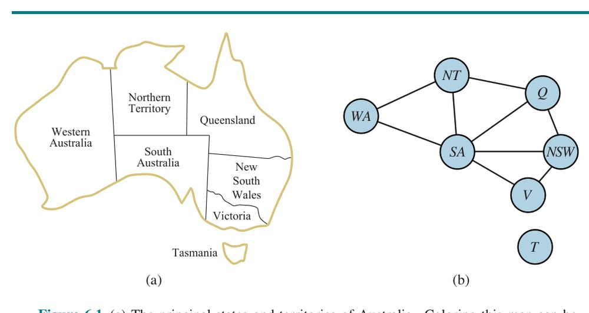
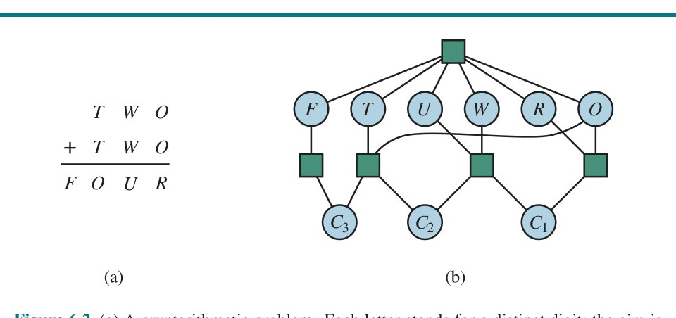
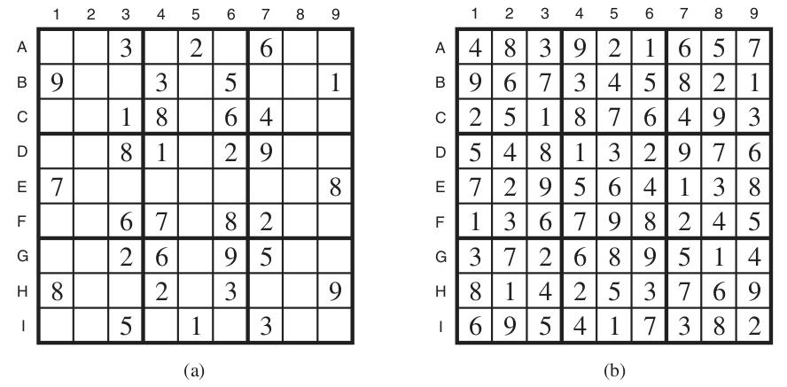
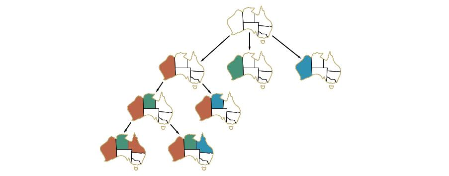
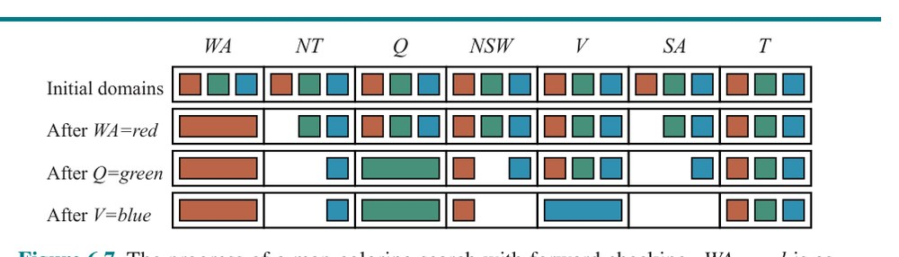
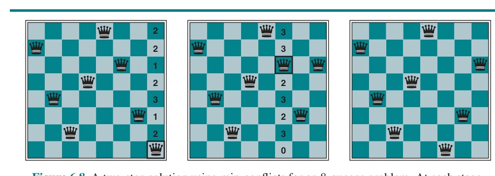
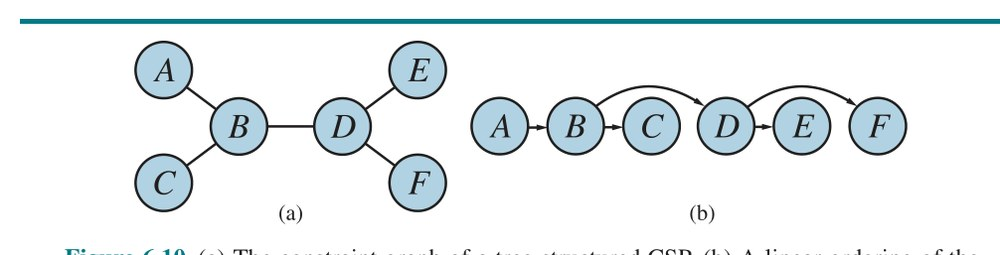
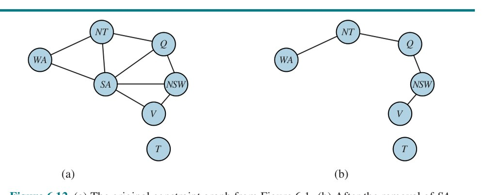
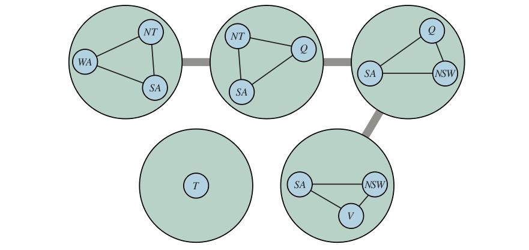

فصل ۶: مسئلههای ارضای قیود (Constraint Satisfaction Problems)
فصلهای ۳ و ۴ این ایده را کاویدند که مسائل را میتوان با جستجو در فضای حالت حل کرد: گرافی که گرههایش حالتها و یالهای میانشان کنشهایند. دیدیم اکتشافیهای حوزهویژه میتوانند هزینهٔ رسیدن به هدف از حالتِ دادهشده را تخمین بزنند، اما از دیدگاه الگوریتم جستجو، هر حالت اتمی یا تقسیمناپذیر است — جعبهٔ سیاهی بدون ساختار درونی. برای هر مسئله به کدِ حوزهویژه برای توصیف گذارهای میان حالتها نیاز داریم.
در این فصل جعبهٔ سیاه را میشکنیم و برای هر حالت از بازنمایی عاملی (Factored Representation) استفاده میکنیم: مجموعهای از متغیرها که هر یک مقداری دارد. مسئله وقتی حل میشود که هر متغیر مقداری داشته باشد که همهٔ قیدهای (Constraints) آن متغیر را برآورده کند. مسئلهای که چنین توصیف شود، «مسئلهٔ ارضای قیود» یا CSP نامیده میشود.
الگوریتمهای جستجوی CSP از ساختار حالتها بهره میگیرند و برای امکانپذیر کردن حل مسائل پیچیده، بهجای اکتشافیهای حوزهویژه از اکتشافیهای عمومی استفاده میکنند. ایدهٔ اصلی، حذف یکبارهٔ بخشهای بزرگ فضای جستجو با شناسایی ترکیبهای متغیر/مقداری است که قیدها را نقض میکنند. CSPها مزیت اضافی نیز دارند: کنشها و مدل گذار را میتوان از توصیف مسئله استنتاج کرد.
مسئلهٔ ارضای قیود از سه مؤلفه تشکیل شده: X، D و C:
دامنهٔ Di از مجموعهای از مقادیر مجاز، {v1, ..., vk}، برای متغیر Xi تشکیل شده. برای نمونه، متغیر بولی دامنهٔ {true, false} دارد. متغیرهای متفاوت میتوانند دامنههای متفاوت با اندازههای متفاوت داشته باشند. هر قید Cj از جفت ⟨scope, rel⟩ تشکیل شده که scope چندتاییِ (Tuple) متغیرهای شرکتکننده در قید و rel «رابطه»ای (Relation) است که مقادیری را تعریف میکند آن متغیرها میتوانند بگیرند. رابطه را میتوان بهصورت مجموعهٔ صریحی از همهٔ چندتاییهای مقادیری که قید را برآورده میکنند بازنمایی کرد، یا بهصورت تابعی که میتواند محاسبه کند آیا چندتاییای عضو رابطه است یا نه. برای نمونه، اگر X1 و X2 هر دو دامنهٔ {1,2,3} داشته باشند، قیدی که میگوید X1 باید از X2 بزرگتر باشد را میتوان چنین نوشت: ⟨(X1,X2), {(3,1),(3,2),(2,1)}⟩ یا ⟨(X1,X2), X1 > X2⟩.
CSPها با «تخصیص»هایی (Assignments) سروکار دارند: {Xi = vi, Xj = vj, ...}. تخصیصی که هیچ قیدی را نقض نکند، تخصیص سازگار (Consistent) یا قانونی نامیده میشود. تخصیص کامل (Complete Assignment) تخصیصی است که در آن به هر متغیر مقداری تخصیص داده شده، و «راهحل» (Solution) یک CSP، تخصیص سازگار و کاملی است. تخصیص جزئی (Partial Assignment) تخصیصی است که برخی متغیرها را بیتخصیص میگذارد، و راهحل جزئی (Partial Solution) تخصیص جزئی سازگاری است. حل یک CSP در حالت کلی مسئلهای NP-کامل است، هرچند زیرردههای مهمی از CSPها هست که میتوان آنها را بسیار کارآمد حل کرد.
فرض کنیم از رومانی خسته شدهایم و به نقشهٔ استرالیا نگاه میکنیم که هر یک از ایالتها و قلمروهایش را نشان میدهد (شکل ۶.۱(الف)). تکلیف ما رنگکردن هر ناحیه با قرمز، سبز یا آبی است، چنانکه هیچ دو ناحیهٔ همسایه رنگ یکسانی نداشته باشند. برای صورتبندی این بهصورت CSP، متغیرها را ناحیهها تعریف میکنیم:
X = {WA, NT, Q, NSW, V, SA, T}دامنهٔ هر متغیر مجموعهٔ Di = {red, green, blue} است. قیدها ایجاب میکنند ناحیههای همسایه رنگهای متمایز داشته باشند. چون نه محل مرز میان ناحیهها هست، نه قید وجود دارد:
C = {SA≠WA, SA≠NT, SA≠Q, SA≠NSW, SA≠V, WA≠NT, NT≠Q, Q≠NSW, NSW≠V}در اینجا از اختصارها استفاده میکنیم؛ SA≠WA میانبری است برای ⟨(SA,WA), SA≠WA⟩، که بهنوبهٔ خود SA≠WA را میتوان کامل چنین برشمرد: {(red,green), (red,blue), (green,red), (green,blue), (blue,red), (blue,green)}.
راهحلهای بسیاری برای این مسئله هست، مانند {WA=red, NT=green, Q=red, NSW=green, V=red, SA=blue, T=red}.
تجسم یک CSP بهصورت «گراف قید» (Constraint Graph) کمککننده است، چنانکه در شکل ۶.۱(ب). گرههای گراف با متغیرهای مسئله متناظرند و یالی هر دو متغیری را که در قیدی شرکت میکنند به هم متصل میکند.

چرا مسئلهای را بهصورت CSP صورتبندی کنیم؟ یک دلیل آن است که CSPها بازنمایی طبیعی برای گسترهٔ وسیعی از مسائل به دست میدهند؛ اغلب صورتبندی مسئله بهصورت CSP آسان است. دلیل دیگر آن است که سالها کار توسعه صرف سریع و کارآمد کردن حلکنندههای CSP شده است. دلیل سوم آن است که حلکنندهٔ CSP میتواند بهسرعت بخشهای بزرگِ فضای جستجو را هرس کند که جستجوگر فضای حالت اتمی نمیتواند. برای نمونه، پس از آنکه در مسئلهٔ استرالیا {SA=blue} را برگزیدیم، میتوانیم نتیجه بگیریم هیچیک از پنج متغیر همسایه نمیتواند مقدار blue بگیرد. رویهٔ جستجویی که از قیدها استفاده نمیکند باید 3⁵ = ۲۴۳ تخصیص را برای پنج متغیر همسایه در نظر بگیرد؛ با قیدها فقط 2⁵ = ۳۲ تخصیص برای در نظر گرفتن داریم، کاهشی ۸۷٪.
در جستجوی فضای حالت اتمی فقط میتوانیم بپرسیم: آیا این حالت خاص هدف است؟ نه؟ این یکی چطور؟ با CSPها، بهمحض آنکه دریابیم تخصیص جزئیای قیدی را نقض میکند، میتوانیم بلافاصله پالایشهای بیشترِ آن تخصیص جزئی را کنار بگذاریم. وانگهی، میتوانیم ببینیم چرا تخصیص راهحل نیست — میبینیم کدام متغیرها قیدی را نقض میکنند — پس میتوانیم توجه را بر متغیرهای مهم متمرکز کنیم. در نتیجه، بسیاری از مسائلی که برای جستجوی فضای حالت اتمی ناشدنیاند، وقتی بهصورت CSP صورتبندی شوند بهسرعت حل میشوند.
کارخانهها مسئلهٔ زمانبندی یک روز کاریِ کارها را دارند، با توجه به قیدهای گوناگون. در عمل، بسیاری از این مسائل با فنون CSP حل میشوند. مسئلهٔ زمانبندی مونتاژ خودرو را در نظر بگیرید. کل کار از تکلیفهایی (Tasks) تشکیل شده و میتوانیم هر تکلیف را بهصورت متغیری مدل کنیم که مقدار هر متغیر، زمان شروع آن تکلیف است و بهصورت عدد صحیحی از دقیقه بیان میشود. قیدها میتوانند اعلام کنند تکلیفی باید پیش از تکلیف دیگر رخ دهد — برای نمونه، چرخ باید پیش از گذاشتن قالپاق نصب شود — و اینکه فقط تعداد معینی تکلیف میتواند همزمان ادامه یابد. قیدها همچنین میتوانند مشخص کنند تکلیفی زمان معینی برای تکمیل میبرد. بخش کوچکی از مونتاژ خودرو را در نظر میگیریم که از ۱۵ تکلیف تشکیل شده: نصب اکسلها (جلو و عقب)، نصب هر چهار چرخ (راست و چپ، جلو و عقب)، سفتکردن مهرههای هر چرخ، نصب قالپاقها و بازرسی مونتاژ نهایی. میتوانیم تکلیفها را با ۱۵ متغیر بازنمایی کنیم:
X = {AxleF, AxleB, WheelRF, WheelLF, WheelRB, WheelLB, NutsRF, NutsLF, NutsRB, NutsLB, CapRF, CapLF, CapRB, CapLB, Inspect}سپس «قیدهای تقدم» (Precedence Constraints) میان تکلیفهای فردی را بازنمایی میکنیم. هرگاه تکلیفی T1 باید پیش از تکلیف T2 رخ دهد و تکلیف T1 مدت d1 برای تکمیل میبرد، قیدی حسابی به شکل T1 + d1 ≤ T2 میافزاییم. در مثال ما، اکسلها باید پیش از نصب چرخها سر جایشان باشند و نصب اکسل ۱۰ دقیقه میبرد، پس مینویسیم:
AxleF + 10 ≤ WheelRF; AxleF + 10 ≤ WheelLF; AxleB + 10 ≤ WheelRB; AxleB + 10 ≤ WheelLBسپس میگوییم برای هر چرخ، باید چرخ را نصب کنیم (۱ دقیقه میبرد)، سپس مهرهها را سفت کنیم (۲ دقیقه) و سرانجام قالپاق را بچسبانیم (۱ دقیقه، اما هنوز بازنمایی نشده):
WheelRF + 1 ≤ NutsRF; NutsRF + 2 ≤ CapRF
WheelLF + 1 ≤ NutsLF; NutsLF + 2 ≤ CapLF
WheelRB + 1 ≤ NutsRB; NutsRB + 2 ≤ CapRB
WheelLB + 1 ≤ NutsLB; NutsLB + 2 ≤ CapLBفرض کنیم چهار کارگر برای نصب چرخها داریم، اما باید یک ابزار را شریک شوند که به نصب اکسل کمک میکند. به قیدی فصلی (Disjunctive Constraint) نیاز داریم که بگوید AxleF و AxleB نباید در زمان همپوشانی کنند؛ یا یکی اول میآید یا دیگری:
(AxleF + 10 ≤ AxleB) or (AxleB + 10 ≤ AxleF)این قید پیچیدهتر به نظر میرسد، ترکیبی از حساب و منطق. اما همچنان به مجموعهای از جفتمقادیری کاهش مییابد که AxleF و AxleB میتوانند بگیرند.
همچنین باید اعلام کنیم بازرسی آخر میآید و ۳ دقیقه میبرد. برای هر متغیر بهجز Inspect قیدی به شکل X + dX ≤ Inspect میافزاییم. سرانجام، فرض کنیم الزامی هست کل مونتاژ در ۳۰ دقیقه تمام شود. میتوانیم با محدودکردن دامنهٔ همهٔ متغیرها به آن برسیم:
Di = {0, 1, 2, 3, ..., 30}این مسئلهٔ خاص حلشدنش بدیهی است، اما CSPها با موفقیت بر مسائل زمانبندی کارگاه مانند این با هزاران متغیر اعمال شدهاند.
سادهترین نوع CSP شامل متغیرهایی با دامنههای گسستهٔ متناهی (Discrete/Finite Domains) است. مسائل رنگآمیزی نقشه و زمانبندی با محدودیت زمانی هر دو از این نوعاند. مسئلهٔ هشتوزیر (شکل 4.3) را نیز میتوان CSP با دامنهٔ متناهی دید، که در آن متغیرهای Q1,...,Q8 با وزیرهای ستونهای ۱ تا ۸ متناظرند و دامنهٔ هر متغیر شمار سطرهای ممکن برای وزیر آن ستون را مشخص میکند: Di = {1,2,3,4,5,6,7,8}. قیدها میگویند هیچ دو وزیری نمیتوانند در یک سطر یا قطر باشند.
دامنهٔ گسسته میتواند نامتناهی (Infinite) باشد، مانند مجموعهٔ اعداد صحیح یا رشتهها. (اگر برای مسئلهٔ زمانبندی کار مهلتی نمیگذاشتیم، برای هر متغیر تعداد بینهایتی زمان شروع وجود داشت.) با دامنههای نامتناهی، باید از قیدهای ضمنی مانند T1 + d1 ≤ T2 استفاده کنیم نه چندتاییهای صریح مقادیر. الگوریتمهای حل خاصی (که اینجا بحث نمیکنیم) برای «قیدهای خطی» (Linear Constraints) روی متغیرهای صحیح وجود دارد — یعنی قیدهایی مانند آنچه داده شد که در آن هر متغیر فقط بهصورت خطی ظاهر میشود. میتوان نشان داد هیچ الگوریتمی برای حل قیدهای غیرخطی (Nonlinear Constraints) عمومی روی متغیرهای صحیح وجود ندارد — مسئله تصمیمناپذیر است.
مسئلههای ارضای قیود با دامنههای پیوسته (Continuous Domains) در جهان واقعی رایجاند و در رشتهٔ تحقیق در عملیات بهطور گسترده مطالعه میشوند. برای نمونه، زمانبندی آزمایشها روی تلسکوپ فضایی هابل به زمانبندی بسیار دقیق مشاهدات نیاز دارد؛ شروع و پایان هر مشاهده و مانور متغیرهایی با مقدار پیوستهاند که باید از گسترهای از قیدهای نجومی، تقدم و توان پیروی کنند. شناختهشدهترین ردهٔ CSPهای با دامنهٔ پیوسته، مسائل برنامهریزی خطی است که در آن قیدها باید برابریها یا نابرابریهای خطی باشند. مسائل برنامهریزی خطی را میتوان در زمانی چندجملهای نسبت به شمار متغیرها حل کرد. مسائل با انواع مختلف قید و تابع هدف نیز مطالعه شدهاند — برنامهریزی درجهدوم، برنامهریزی مخروطی مرتبهٔ دوم و الی آخر. این مسائل حوزهٔ مهمی از ریاضیات کاربردی را تشکیل میدهند.
افزون بر بررسی انواع متغیرهایی که میتوانند در CSPها ظاهر شوند، بررسی انواع قیدها نیز مفید است. سادهترین نوع، «قید یکتایی» (Unary Constraint) است که مقدار یک متغیر تکی را محدود میکند. برای نمونه، در مسئلهٔ رنگآمیزی نقشه ممکن است چنین باشد که استرالیاییهای جنوبی رنگ سبز را تحمل نمیکنند؛ میتوانیم آن را با قید یکتایی ⟨(SA), SA≠green⟩ بیان کنیم. (مشخصات آغازین دامنهٔ یک متغیر را نیز میتوان قید یکتایی دید.) «قید دوتایی» (Binary Constraint) دو متغیر را به هم مربوط میکند. برای نمونه، SA≠NSW قید دوتایی است. «CSP دوتایی» (Binary CSP) CSPی است با فقط قیدهای یکتایی و دوتایی؛ میتوان آن را بهصورت گراف قید، مانند شکل ۶.۱(ب)، بازنمایی کرد.
همچنین میتوانیم «قیدهای مرتبهٔ بالاتر» (Higher-Order Constraints) تعریف کنیم. قید سهتایی Between(X,Y,Z)، برای نمونه، چنین تعریف میشود: ⟨(X,Y,Z), X < Y < Z or X > Y > Z⟩.
قیدی که شامل تعداد دلخواهی متغیر است «قید سراسری» (Global Constraint) نامیده میشود. (این نام سنتی اما گیجکننده است، زیرا قید سراسری لازم نیست همهٔ متغیرهای مسئله را در بر بگیرد.) یکی از رایجترین قیدهای سراسری Alldiff است که میگوید همهٔ متغیرهای درگیر در قید باید مقادیر متفاوتی داشته باشند. در مسائل سودوکو (بخش ۶.۲.۶ را ببینید)، همهٔ متغیرهای یک سطر، ستون یا جعبهٔ 3×3 باید قید Alldiff را برآورده کنند. مثال دیگر، معماهای محاسباتنویسی (Cryptarithmetic) است (شکل ۶.۲(الف)). هر حرف در معمای محاسباتنویسی رقم متفاوتی را بازنمایی میکند. برای مورد شکل ۶.۲(الف)، این بهصورت قید سراسری Alldiff(F,T,U,W,R,O) بازنمایی میشود. قیدهای جمع روی چهار ستون معما را میتوان بهصورت قیدهای n-تایی زیر نوشت:
O + O = R + 10·C1
C1 + W + W = U + 10·C2
C2 + T + T = O + 10·C3
C3 = Fکه C1، C2 و C3 متغیرهای کمکیاند که رقم نقلی به ستون دهگان، صدگان یا هزارگان را بازنمایی میکنند. این قیدها را میتوان در «ابرگراف قید» (Constraint Hypergraph) بازنمایی کرد، مانند آنچه در شکل ۶.۲(ب) نشان داده شده. ابرگراف از گرههای معمولی (دایرهها در شکل) و «ابرگره»ها (مربعها) تشکیل شده که قیدهای n-تایی — قیدهای درگیر با n متغیر — را بازنمایی میکنند.

از سوی دیگر، چنانکه تمرین 6.NARY از شما میخواهد اثبات کنید، هر قید دامنهٔ متناهی را میتوان با معرفی متغیرهای کمکیِ کافی به مجموعهای از قیدهای دوتایی کاهش داد. این بدان معناست میتوانستیم هر CSP را به CSPی با فقط قیدهای دوتایی تبدیل کنیم — که قطعاً زندگی طراح الگوریتم را سادهتر میکند. راه دیگر تبدیل CSP با قیدهای n-تایی به CSP دوتایی، «تبدیل گراف دوتایی» (Dual Graph Transformation) است: گراف تازهای ایجاد کنید که در آن برای هر قید گراف اصلی یک متغیر و برای هر جفت قیدِ گراف اصلی که متغیر مشترکی دارند، یک قید دوتایی باشد. برای نمونه، CSPی را با متغیرهای X = {X,Y,Z} در نظر بگیرید، هر یک با دامنهٔ {1,2,3,4,5}، و با دو قید C1: ⟨(X,Y,Z), X+Y=Z⟩ و C2: ⟨(X,Y), X+1=Y⟩. آنگاه گراف دوتایی متغیرهای X = {C1,C2} را خواهد داشت، که دامنهٔ متغیر C1 در گراف دوتایی، مجموعهٔ چندتاییهای {(xi,yj,zk)} از قید C1 در مسئلهٔ اصلی است و به همین ترتیب دامنهٔ C2 مجموعهٔ چندتاییهای {(xi,yj)} است. گراف دوتایی قید دوتایی ⟨(C1,C2), R1⟩ را دارد که R1 رابطهٔ تازهای است که قید میان C1 و C2 را تعریف میکند؛ در این مورد R1 = {((1,2,3),(1,2)), ((2,3,5),(2,3))} خواهد بود.
با این حال دو دلیل هست که ممکن است قید سراسری مانند Alldiff را بر مجموعهای از قیدهای دوتایی ترجیح دهیم. نخست، نوشتن توصیف مسئله با Alldiff آسانتر و کمخطاتر است. دوم، میتوان الگوریتمهای استنتاج ویژهمنظوره برای قیدهای سراسری طراحی کرد که از کارکردن با قیدهای اولیه کارآمدترند. این الگوریتمهای استنتاج را در بخش ۶.۲.۵ توصیف میکنیم.
قیدهایی که تاکنون توصیف کردهایم همگی «قیدهای مطلق» (Absolute Constraints) بودهاند که نقضشان راهحل بالقوه را ناممکن میکند. بسیاری از CSPهای جهان واقعی شامل «قیدهای ترجیحی» (Preference Constraints) هستند که نشان میدهند کدام راهحلها ترجیح داده میشوند. برای نمونه، در مسئلهٔ زمانبندی کلاسهای دانشگاه قیدهای مطلقی هست که هیچ استادی نمیتواند همزمان دو کلاس تدریس کند. اما ممکن است قیدهای ترجیحی هم مجاز کنیم: استاد ر. ترجیح میدهد صبحها تدریس کند، در حالی که استاد ن. بعدازظهرها را ترجیح میدهد. برنامهای که استاد ر. ساعت ۲ بعدازظهر تدریس میکند همچنان راهحل مجازی خواهد بود (مگر آنکه استاد ر. اتفاقاً رئیس بخش باشد) اما راهحل بهینهای نخواهد بود.
قیدهای ترجیحی را اغلب میتوان بهصورت هزینههایی بر تخصیصهای متغیرِ فردی رمزگذاری کرد — برای نمونه، تخصیص جایگاه بعدازظهر به استاد ر. ۲ امتیاز در برابر تابع هدف کلی هزینه دارد، در حالی که جایگاه صبح ۱ هزینه دارد. با این صورتبندی، CSPهای با ترجیح را میتوان با روشهای جستجوی بهینهسازی حل کرد، چه مسیرمحور چه محلی. چنین مسئلهای را «مسئلهٔ بهینهسازی مقید» (Constrained Optimization Problem) یا COP مینامیم. برنامههای خطی یکی از ردههای COP هستند.
الگوریتم جستجوی فضای حالت اتمی فقط از یک راه پیشرفت میکند: با گسترش گره برای بازدید از جانشینها. الگوریتم CSP انتخابها دارد. میتواند با انتخاب تخصیص متغیرِ تازهای جانشین تولید کند، یا میتواند نوع خاصی از استنتاج به نام «انتشار قید» (Constraint Propagation) انجام دهد: استفاده از قیدها برای کاهش شمار مقادیر قانونی یک متغیر، که به نوبهٔ خود میتواند مقادیر قانونی متغیر دیگر را کاهش دهد، و الی آخر. ایده آن است که این کار انتخابهای کمتری برای در نظر گرفتن هنگام برداشتن انتخاب بعدی تخصیص متغیر باقی میگذارد.
انتشار قید ممکن است با جستجو در هم بافته شود، یا ممکن است بهصورت گام پیشپردازشی، پیش از آغاز جستجو انجام شود. گاهی این پیشپردازش میتواند کل مسئله را حل کند، پس اصلاً جستجویی لازم نیست. ایدهٔ کلیدی «سازگاری محلی» (Local Consistency) است. اگر هر متغیر را گرهای در گراف (شکل ۶.۱(ب) را ببینید) و هر قید دوتایی را یالی بدانیم، آنگاه فرایند اعمال سازگاری محلی در هر بخش از گراف باعث حذف مقادیر ناسازگار در سراسر گراف میشود. انواع مختلفی از سازگاری محلی هست که اکنون بهنوبت پوشش میدهیم.
یک متغیر تکی (متناظر با گرهای در گراف CSP) «سازگار-گرهای» (Node-Consistent) است اگر همهٔ مقادیر دامنهٔ متغیر، قیدهای یکتایی متغیر را برآورده کنند. برای نمونه، در تغییرِ مسئلهٔ رنگآمیزی نقشهٔ استرالیا (شکل ۶.۱) که در آن استرالیاییهای جنوبی سبز را دوست ندارند، متغیر SA با دامنهٔ {red, green, blue} آغاز میکند و میتوانیم با حذف green آن را سازگار-گرهای کنیم و SA را با دامنهٔ کاهشیافتهٔ {red, blue} باقی بگذاریم. میگوییم گرافی سازگار-گرهای است اگر هر متغیر در گراف سازگار-گرهای باشد.
حذف همهٔ قیدهای یکتایی در CSP با کاهش دامنهٔ متغیرهای دارای قید یکتایی در آغاز فرایند حل آسان است. چنانکه پیشتر یاد شد، تبدیل همهٔ قیدهای n-تایی به دوتایی نیز ممکن است. به همین سبب، برخی حلکنندههای CSP فقط با قیدهای دوتایی کار میکنند و انتظار دارند کاربر بقیهٔ قیدها را از پیش حذف کند. برای بقیهٔ این فصل این فرض را میکنیم، مگر جاهایی که خلاف آن یاد شود.
متغیری در CSP «سازگار-کمانی» (Arc-Consistent)¹ است اگر هر مقدار در دامنهاش قیدهای دوتایی متغیر را برآورده کند. صوریتر، Xi نسبت به متغیر دیگر Xj سازگار-کمانی است اگر برای هر مقدار در دامنهٔ کنونی Di مقداری در دامنهٔ Dj وجود داشته باشد که قید دوتایی روی کمان (Xi,Xj) را برآورده کند. گرافی سازگار-کمانی است اگر هر متغیر نسبت به هر متغیر دیگر سازگار-کمانی باشد. برای نمونه، قید Y = X² را در نظر بگیرید که دامنهٔ هر دو X و Y مجموعهٔ رقمهای دهدهی است. میتوانیم این قید را صریحاً چنین بنویسیم: ⟨(X,Y), {(0,0),(1,1),(2,4),(3,9)}⟩.
برای سازگار-کمانیکردن X نسبت به Y، دامنهٔ X را به {0,1,2,3} کاهش میدهیم. اگر Y را نیز نسبت به X سازگار-کمانی کنیم، دامنهٔ Y به {0,1,4,9} تبدیل میشود و کل CSP سازگار-کمانی است. از سوی دیگر، سازگاری کمانی هیچ کاری برای مسئلهٔ رنگآمیزی نقشهٔ استرالیا نمیتواند بکند. قید نابرابری زیر روی (SA,WA) را در نظر بگیرید:
{(red,green), (red,blue), (green,red), (green,blue), (blue,red), (blue,green)}هر مقداری که برای SA (یا WA) برگزینید، مقدار معتبری برای متغیر دیگر هست. پس اعمال سازگاری کمانی هیچ اثری بر دامنههای هیچیک از دو متغیر ندارد.
محبوبترین الگوریتم برای اعمال سازگاری کمانی AC-3 نامیده میشود (شکل ۶.۳ را ببینید). برای سازگار-کمانیکردن هر متغیر، الگوریتم AC-3 صفی از کمانها برای بررسی نگه میدارد. در آغاز، صف شامل همهٔ کمانهای CSP است. (هر قید دوتایی دو کمان میشود، یکی در هر جهت.) AC-3 سپس کمان دلخواهی (Xi,Xj) را از صف بیرون میآورد و Xi را نسبت به Xj سازگار-کمانی میکند. اگر این Di را بدون تغییر بگذارد، الگوریتم فقط به کمان بعدی میرود. اما اگر Di را بازبینی کند (دامنه را کوچکتر کند)، همهٔ کمانهای (Xk,Xi) را به صف میافزاییم که در آن Xk همسایهٔ Xi است. باید این کار را بکنیم، زیرا تغییر Di ممکن است کاهشهای بیشتری در Dk را ممکن کند، حتی اگر Xk را قبلاً در نظر گرفته باشیم.
اگر Di به هیچ بازبینی شود، میدانیم کل CSP هیچ راهحل سازگاری ندارد و AC-3 میتواند بلافاصله شکست بازگرداند. وگرنه، به بررسی ادامه میدهیم و میکوشیم مقادیری را از دامنههای متغیرها حذف کنیم تا آنکه دیگر کمانی در صف نماند. در آن نقطه، با CSPی روبهروییم که با CSP اصلی همارز است — هر دو راهحلهای یکسانی دارند — اما CSP سازگار-کمانی سریعتر جستجو خواهد شد، زیرا متغیرهایش دامنههای کوچکتری دارند. در برخی موارد، مسئله را کامل حل میکند (با کاهش هر دامنه به اندازهٔ ۱) و در موارد دیگر اثبات میکند هیچ راهحلی نیست (با کاهش دامنهای به اندازهٔ ۰).
function AC-3(csp) returns false if an inconsistency is found and true otherwise
queue ← a queue of arcs, initially all the arcs in csp
while queue is not empty do
(Xi, Xj) ← POP(queue)
if REVISE(csp, Xi, Xj) then
if size of Di = 0 then return false
for each Xk in Xi.NEIGHBORS - {Xj} do
add (Xk, Xi) to queue
return true
function REVISE(csp, Xi, Xj) returns true iff we revise the domain of Xi
revised ← false
for each x in Di do
if no value y in Dj allows (x,y) to satisfy the constraint between Xi and Xj then
delete x from Di
revised ← true
return revisedپیچیدگی AC-3 را میتوان چنین تحلیل کرد. CSPی را با n متغیر فرض کنید، هر یک با اندازهٔ دامنهٔ حداکثر d، و با c قید دوتایی (کمان). هر کمان (Xk,Xi) فقط d بار میتواند در صف درج شود، زیرا Xi حداکثر d مقدار برای حذف دارد. بررسی سازگاری یک کمان را میتوان در زمان O(d²) انجام داد، پس در مجموع بدترین حالت O(cd³) زمان میگیریم.
سازگاری کمانی دامنهها (قیدهای یکتایی) را با استفاده از کمانها (قیدهای دوتایی) سفت میکند. برای پیشرفت در مسائلی مانند رنگآمیزی نقشه، به مفهوم قویتری از سازگاری نیاز داریم. «سازگاری مسیر» (Path Consistency) قیدهای دوتایی را با استفاده از قیدهای ضمنیای که با نگاهکردن به سهتایی متغیرها استنتاج میشوند سفت میکند.
مجموعهٔ دو متغیرهٔ {Xi,Xj} نسبت به متغیر سوم Xm «سازگار-مسیر» است اگر برای هر تخصیص {Xi = a, Xj = b} سازگار با قیدهای (در صورت وجود) روی {Xi,Xj}، تخصیصی به Xm وجود داشته باشد که قیدهای روی {Xi,Xm} و {Xm,Xj} را برآورده کند. این نام به سازگاری کلی مسیر از Xi تا Xj با Xm در میانه اشاره دارد.
ببینیم سازگاری مسیر در رنگآمیزی نقشهٔ استرالیا با دو رنگ چگونه عمل میکند. مجموعهٔ {WA,SA} را نسبت به NT سازگار-مسیر میکنیم. با برشمردن تخصیصهای سازگار به مجموعه آغاز میکنیم. در این مورد فقط دو تای آن هست: {WA = red, SA = blue} و {WA = blue, SA = red}. میبینیم با هر دوی این تخصیصها، NT نمیتواند نه red باشد نه blue (زیرا یا با WA یا با SA در تعارض میافتد). چون انتخاب معتبری برای NT نیست، هر دو تخصیص را حذف میکنیم و در پایان هیچ تخصیص معتبری برای {WA,SA} نداریم. پس میدانیم هیچ راهحلی برای این مسئله نمیتواند وجود داشته باشد.
شکلهای قویتر انتشار را میتوان با مفهوم «سازگاری k-تایی» (K-Consistency) تعریف کرد. CSP «سازگار-k» است اگر برای هر مجموعه از k−1 متغیر و برای هر تخصیص سازگار به آن متغیرها، مقدار سازگاری برای هر متغیر kام وجود داشته باشد. برای نمونه، ۱-سازگاری یعنی هر متغیر تکی مقداری دارد که همهٔ قیدهای یکتایی را برآورده میکند؛ این همان سازگاری گرهای است. ۲-سازگاری همان سازگاری کمانی است. ۳-سازگاری یعنی هر جفت متغیرِ سازگار را میتوان به متغیر سومی بسط داد که سازگار باشد؛ و به همین ترتیب برای سازگاری ۴-تایی، ۵-تایی و الی آخر.
میتوان اثبات کرد CSPی که سازگار-n است (n تعداد متغیرها) بدون جستجو قابل حل است، به این معنا که میتوان یک به یک متغیرها را مقداردهی کرد، و در هر گام مقدارِ بعدی را میتوان با بررسی قیدها انتخاب کرد. برای هر متغیر Xi فقط باید d مقدار موجود در دامنه را جستجو کنیم تا مقداری سازگار با X1,...,Xi−1 بیابیم. زمان کل اجرا فقط O(n²d) است.
البته ناهار مجانی وجود ندارد: ارضای قید در حالت کلی NP-کامل است و هر الگوریتمی برای برقراری سازگاری n باید در بدترین حالت زمانی نمایی نسبت به n بگیرد. بدتر از آن، سازگاری-n به فضایی نمایی نسبت به n نیز نیاز دارد. در عمل، تعیین سطح مناسب بررسی سازگاری بیشتر علمِ تجربی است. محاسبهٔ ۲-سازگاری رایج است و ۳-سازگاری کمتر رایج.
به یاد آورید قید سراسری قیدی است شامل تعداد دلخواهی متغیر (اما نه لزوماً همهٔ متغیرها). قیدهای سراسری در مسائل واقعی مکرراً رخ میدهند و میتوان آنها را با الگوریتمهای ویژهمنظورهای مدیریت کرد که از روشهای عمومیِ تاکنونتوصیفشده کارآمدترند. برای نمونه، قید Alldiff میگوید همهٔ متغیرهای درگیر در قید باید مقادیر متمایز داشته باشند (مانند مسئلهٔ محاسباتنویسیِ بالا و معماهای سودوکو در ادامه). یکی از شکلهای سادهٔ تشخیص ناسازگاری برای قیدهای Alldiff چنین کار میکند: اگر m متغیر در قید درگیر باشند و در مجموع n مقدار متمایز ممکن داشته باشند، و m > n، آنگاه قید قابل ارضای نیست.
این به الگوریتم سادهٔ زیر میانجامد: نخست، هر متغیری در قید که دامنهٔ تکتایی دارد را حذف کنید و مقدار آن متغیر را از دامنههای متغیرهای باقیمانده حذف کنید. تا وقتی متغیر تکتایی هست تکرار کنید. اگر در هر نقطه دامنهٔ خالی تولید شود یا متغیرهای بیشتری از مقادیر دامنهٔ باقیمانده باشند، ناسازگاری تشخیص داده شده است.
این روش میتواند ناسازگاری تخصیص {WA=red, NSW=red} را برای شکل ۶.۱ تشخیص دهد. توجه کنید متغیرهای SA، NT و Q عملاً با قید Alldiff به هم متصلاند، زیرا هر جفت باید دو رنگ متفاوت داشته باشند. پس از اعمال AC-3 با تخصیص جزئی، دامنههای SA، NT و Q همگی به {green, blue} کاهش مییابند. یعنی سه متغیر و فقط دو رنگ داریم، پس قید Alldiff نقض شده. بنابراین، رویهٔ سازگاری سادهای برای قید مرتبهبالاتر گاهی مؤثرتر از اعمال سازگاری کمانی بر مجموعهای همارز از قیدهای دوتایی است.
قید مرتبهبالاتر مهم دیگر «قید منبع» (Resource Constraint) است که گاهی قید Atmost نامیده میشود. برای نمونه، در مسئلهٔ زمانبندی، P1,...,P4 شمار پرسنل تخصیصیافته به هر یک از چهار تکلیف باشد. قید اینکه در مجموع بیش از ۱۰ پرسنل تخصیص نیافته باشد چنین نوشته میشود: Atmost(10, P1, P2, P3, P4). میتوانیم ناسازگاری را صرفاً با بررسی مجموع کمینههای دامنههای کنونی تشخیص دهیم؛ برای نمونه، اگر هر متغیر دامنهٔ {3,4,5,6} داشته باشد، قید Atmost قابل ارضای نیست. همچنین میتوانیم با حذف بیشینهٔ هر دامنه اگر با کمینههای دامنههای دیگر سازگار نباشد، سازگاری را اعمال کنیم. پس اگر در مثال ما هر متغیر دامنهٔ {2,3,4,5,6} داشته باشد، مقادیر ۵ و ۶ را میتوان از هر دامنه حذف کرد.
برای مسائل بزرگِ محدود-به-منبع با مقادیر صحیح — مانند مسائل لجستیکیِ جابهجایی هزاران نفر در صدها وسیلهٔ نقلیه — معمولاً نمیتوان دامنهٔ هر متغیر را بهصورت مجموعهٔ بزرگی از اعداد صحیح بازنمایی کرد و آن مجموعه را بهتدریج با روشهای بررسی سازگاری کاهش داد. در عوض، دامنهها با کران بالا و پایین بازنمایی و با «انتشار کرانها» (Bounds Propagation) مدیریت میشوند. برای نمونه، در مسئلهٔ زمانبندی خطوط هوایی، فرض کنیم دو پرواز F1 و F2 هست که هواپیماهایشان بهترتیب ظرفیتهای ۱۶۵ و ۳۸۵ دارند. دامنههای آغازین شمار مسافران پروازهای F1 و F2 پس چنیناند:
D1 = [0, 165]
D2 = [0, 385]حال فرض کنیم قید اضافی هست که دو پرواز با هم باید ۴۲۰ نفر را حمل کنند: F1 + F2 = 420. با انتشار قیدهای کران، دامنهها را به اینها کاهش میدهیم:
D1 = [35, 165]
D2 = [255, 385]میگوییم CSP «سازگار-کران» (Bounds-Consistent) است اگر برای هر متغیر X، و برای هر دو مقدار کران پایین و کران بالای X، مقداری از Y وجود داشته باشد که قید میان X و Y را برای هر متغیر Y برآورده کند. این نوع انتشار کران بهطور گسترده در مسائل قید عملی استفاده میشود.
معمای پرطرفدار سودوکو میلیونها نفر را با مسئلههای ارضای قیود آشنا کرده، هرچند شاید خودشان نفهمند. تختهٔ سودوکو از ۸۱ خانه تشکیل شده که برخی از آنها در آغاز با رقمهایی از ۱ تا ۹ پر شدهاند. معما پرکردن همهٔ خانههای باقیمانده است چنانکه هیچ رقمی در هیچ سطر، ستون یا جعبهٔ 3×3 دوبار تکرار نشود (شکل ۶.۴ را ببینید). سطر، ستون یا جعبه «واحد» (Unit) نامیده میشود.

معماهای سودوکویی که در روزنامهها و کتابهای معما میآیند این ویژگی را دارند که دقیقاً یک راهحل دارند. هرچند برخی را با دست میتوان حلکردنیِ دشوار دانست و دهها دقیقه میبرند، یک حلکنندهٔ CSP میتواند هزاران معما را در ثانیه مدیریت کند.
معمای سودوکو را میتوان CSP با ۸۱ متغیر دانست، برای هر خانه یکی. از نامهای متغیر A1 تا A9 برای سطر بالا (چپ به راست) استفاده میکنیم و تا I1 تا I9 برای سطر پایین. خانههای خالی دامنهٔ {1,2,3,4,5,6,7,8,9} دارند و خانههای ازپیشپر، دامنهای شامل یک مقدار تکی. افزون بر این، ۲۷ قید Alldiff متفاوت هست، یکی برای هر واحد (سطر، ستون و جعبهٔ ۹خانهای):
Alldiff(A1, A2, A3, A4, A5, A6, A7, A8, A9)
Alldiff(B1, B2, B3, B4, B5, B6, B7, B8, B9)
...
Alldiff(A1, B1, C1, D1, E1, F1, G1, H1, I1)
Alldiff(A2, B2, C2, D2, E2, F2, G2, H2, I2)
...
Alldiff(A1, A2, A3, B1, B2, B3, C1, C2, C3)
Alldiff(A4, A5, A6, B4, B5, B6, C4, C5, C6)
...ببینیم سازگاری کمانی ما را تا کجا میبرد. فرض کنیم قیدهای Alldiff به قیدهای دوتایی بسط یافتهاند (مانند A1≠A2) تا بتوانیم الگوریتم AC-3 را مستقیماً اعمال کنیم. متغیر E6 از شکل ۶.۴(الف) را در نظر بگیرید — خانهٔ خالی میان ۲ و ۸ در جعبهٔ میانی. از قیدهای جعبه، میتوانیم ۱، ۲، ۷ و ۸ را از دامنهٔ E6 حذف کنیم. از قیدهای ستونش، میتوانیم ۵، ۶، ۲، ۸، ۹ و ۳ را حذف کنیم (هرچند ۲ و ۸ از قبل حذف شده بودند). این E6 را با دامنهٔ {4} باقی میگذارد؛ به بیان دیگر، پاسخ E6 را میدانیم. حال متغیر I6 را در نظر بگیرید — خانهٔ جعبهٔ میانی پایین که با ۱، ۳ و ۳ احاطه شده. با اعمال سازگاری کمانی در ستونش، ۵، ۶، ۲، ۴ (چون اکنون میدانیم E6 باید ۴ باشد)، ۸، ۹ و ۳ را حذف میکنیم. با سازگاری کمانی با I5 مقدار ۱ را حذف میکنیم و فقط مقدار ۷ در دامنهٔ I6 میماند. حال در ستون ۶ هشت مقدار شناختهشده هست، پس سازگاری کمانی میتواند استنتاج کند A6 باید ۱ باشد. استنتاج در همین مسیر ادامه مییابد و سرانجام AC-3 میتواند کل معما را حل کند — همهٔ متغیرها دامنههایشان به یک مقدار تکی کاهش مییابد، چنانکه در شکل ۶.۴(ب) نشان داده شده.
البته سودوکو بهزودی جذابیتش را از دست میداد اگر هر معما با اعمال مکانیکی AC-3 حل میشد، و واقعاً AC-3 فقط برای آسانترین معماهای سودوکو کار میکند. معماهای کمی سختتر را PC-2 میتواند حل کند، اما به هزینهٔ محاسباتی بیشتر: در معمای سودوکو ۲۵۵٬۹۶۰ قید مسیر متفاوت برای در نظر گرفتن هست. برای حل سختترین معماها و پیشرفت کارآمد، باید هوشمندانهتر باشیم.
در واقع، جذابیت معماهای سودوکو برای حلکنندهٔ انسانی نیاز به خلاقیت در اعمال راهبردهای استنتاج پیچیدهتر است. هواداران نامهای رنگارنگی برایشان دارند، مانند «سهتاییهای لخت». آن راهبرد چنین کار میکند: در هر واحد (سطر، ستون یا جعبه)، سه خانه بیابید که هر یک دامنهای شامل همان سه عدد یا زیرمجموعهای از آنها دارد. برای نمونه، سه دامنه ممکن است {1,8}، {3,8} و {1,3,8} باشند. از این نمیدانیم کدام خانه شامل ۱، ۳ یا ۸ است، اما میدانیم سه عدد باید میان سه خانه توزیع شوند. پس میتوانیم ۱، ۳ و ۸ را از دامنههای هر خانهٔ دیگر در واحد حذف کنیم.
جالب است توجه کنیم چقدر میتوانیم پیش برویم بدون آنکه چیز خاصی دربارهٔ سودوکو بگوییم. البته باید بگوییم ۸۱ متغیر هست، دامنههایشان رقمهای ۱ تا ۹ است و ۲۷ قید Alldiff هست. اما فراتر از آن، همهٔ راهبردها — سازگاری کمانی، سازگاری مسیر و الی آخر — بهطور کلی بر همهٔ CSPها اعمال میشوند، نه فقط مسائل سودوکو. حتی سهتاییهای لخت واقعاً راهبردی برای اعمال سازگاری قیدهای Alldiff است و به خودی خود ویژهٔ سودوکو نیست. این قدرت صورتبندی CSP است: برای هر حوزهٔ مسئلهٔ تازه، فقط باید مسئله را بر حسب قیدها تعریف کنیم؛ سپس سازوکارهای عمومی حل قید میتوانند کار را به دست بگیرند.
گاهی میتوانیم فرایند انتشار قید را کامل کنیم و همچنان متغیرهایی با چند مقدار ممکن داشته باشیم. در آن صورت باید برای راهحل جستجو کنیم. در این بخش الگوریتمهای جستجوی عقبگرد (Backtracking Search) را پوشش میدهیم که روی تخصیصهای جزئی کار میکنند؛ در بخش بعد الگوریتمهای جستجوی محلی روی تخصیصهای کامل را میبینیم.
در نظر بگیرید جستجوی استاندارد محدود-به-عمق (از فصل ۳) چگونه میتوانست CSPها را حل کند. حالت، تخصیص جزئی میبود و کنش، بسط تخصیص با افزودن مثلاً NSW = red یا SA = blue برای مسئلهٔ رنگآمیزی نقشهٔ استرالیا. برای CSP با n متغیرِ دامنهٔ اندازهٔ d، به درخت جستجویی میرسیدیم که در آن همهٔ تخصیصهای کامل (و در نتیجه همهٔ راهحلها) گرههای برگ در عمق n هستند. اما توجه کنید ضریب انشعاب در سطح بالا nd میبود، زیرا هر یک از d مقدار را میتوان به هر یک از n متغیر تخصیص داد. در سطح بعد، ضریب انشعاب (n−1)d است و الی آخر برای n سطح. پس درخت n! · dⁿ برگ دارد، حتی با آنکه فقط dⁿ تخصیص کامل ممکن هست!
میتوانیم آن ضریب n! را با شناخت ویژگی حیاتی CSPها بازپس بگیریم: «جابهجاییپذیری» (Commutativity). مسئله جابهجاییپذیر است اگر ترتیب اعمال هر مجموعهٔ دادهشده از کنشها مهم نباشد. در CSPها، فرقی نمیکند نخست NSW = red را تخصیص دهیم و سپس SA = blue، یا برعکس. پس در هر گره از درخت جستجو فقط باید یک متغیر را در نظر بگیریم. در ریشه ممکن است انتخابی میان SA=red، SA=green و SA=blue بکنیم، اما هرگز بین NSW=red و SA=blue انتخاب نمیکنیم. با این محدودیت، شمار برگها dⁿ است، چنانکه امیدوار بودیم. در هر سطح درخت باید انتخاب کنیم با کدام متغیر سروکار داریم، اما هرگز لازم نیست بر آن انتخاب عقبگرد کنیم.
شکل ۶.۵ رویهٔ جستجوی عقبگرد را برای CSPها نشان میدهد. بهطور مکرر متغیر تخصیصنیافتهای را برمیگزیند و سپس همهٔ مقادیر دامنهٔ آن متغیر را بهنوبت میآزماید و میکوشد هر یک را با فراخوانی بازگشتی به راهحل بسط دهد. اگر فراخوانی موفق شود، راهحل بازگردانده میشود و اگر شکست بخورد، تخصیص به حالت قبلی بازگردانده میشود و مقدار بعدی را میآزماییم. اگر هیچ مقداری کار نکند، شکست بازمیگردانیم. بخشی از درخت جستجو برای مسئلهٔ استرالیا در شکل ۶.۶ نشان داده شده، که در آن متغیرها را به ترتیب WA, NT, Q, ... تخصیص دادهایم. توجه کنید BACKTRACKING-SEARCH فقط یک بازنمایی از حالت (تخصیص) نگه میدارد و آن بازنمایی را تغییر میدهد، نه آنکه بازنماییهای تازه ایجاد کند (صفحهٔ ۸۰ را ببینید).
function BACKTRACKING-SEARCH(csp) returns a solution or failure
return BACKTRACK(csp, {})
function BACKTRACK(csp, assignment) returns a solution or failure
if assignment is complete then return assignment
var ← SELECT-UNASSIGNED-VARIABLE(csp, assignment)
for each value in ORDER-DOMAIN-VALUES(csp, var, assignment) do
if value is consistent with assignment then
add {var = value} to assignment
inferences ← INFERENCE(csp, var, assignment)
if inferences ≠ failure then
add inferences to assignment
result ← BACKTRACK(csp, assignment)
if result ≠ failure then return result
remove {var = value} and inferences from assignment
return failure
در حالی که الگوریتمهای جستجوی نامطلع فصل ۳ فقط با عرضهٔ اکتشافیهای حوزهویژه بهبود مییافتند، معلوم میشود جستجوی عقبگرد را میتوان با اکتشافیهای مستقل از حوزه بهبود داد که از بازنمایی عاملی CSPها بهره میگیرند. در چهار بخش زیر نشان میدهیم چگونه:
الگوریتم عقبگرد شامل این خط است:
var ← SELECT-UNASSIGNED-VARIABLE(csp, assignment)سادهترین راهبرد برای SELECT-UNASSIGNED-VARIABLE «ترتیب ایستا» است: متغیرها را بهترتیب {X1, X2, ...} برگزین. سادهترین بعدی، انتخاب تصادفی است. هیچکدام از این راهبردها بهینه نیست. برای نمونه، پس از تخصیصهای WA=red و NT=green در شکل ۶.۶، فقط یک مقدار ممکن برای SA هست، پس منطقی است SA=blue را بعدی تخصیص دهیم نه Q را. در واقع، پس از تخصیص SA، انتخابهای Q، NSW و V همگی اجباری میشوند.
این ایدهٔ شهودی — برگزیدن متغیری با کمترین مقدار «قانونی» — «اکتشافی کمترین-مقادیر-باقیمانده» (Minimum-Remaining-Values، یا MRV) نامیده میشود. همچنین «متغیرِ بیشترین-قید» یا اکتشافی «اول-شکست» نامیده شده؛ دومی از آن رو که متغیری را برمیگزیند که به احتمال زیاد بهزودی شکست میخورد و بدین ترتیب درخت جستجو را هرس میکند. اگر متغیری X هیچ مقدار قانونی باقی نگذاشته باشد، اکتشافی MRV آن را برخواهد گزید و شکست بلافاصله تشخیص داده میشود — و از جستجوهای بیهوده در میان متغیرهای دیگر پرهیز میشود. اکتشافی MRV معمولاً بهتر از ترتیب تصادفی یا ایستا عمل میکند، گاهی چند مرتبهٔ بزرگی بهتر، هرچند نتایج به مسئله بستگی دارد.
اکتشافی MRV در انتخاب نخستین ناحیه برای رنگکردن در استرالیا اصلاً کمک نمیکند، زیرا در آغاز هر ناحیه سه رنگ قانونی دارد. در این مورد، «اکتشافی درجه» (Degree Heuristic) به کار میآید. این اکتشافی میکوشد ضریب انشعاب انتخابهای آینده را با برگزیدن متغیری که در بیشترین شمار قیدها با دیگر متغیرهای تخصیصنیافته شرکت دارد کاهش دهد. در شکل ۶.۱، SA متغیری با بیشترین درجه، یعنی ۵، است؛ دیگر متغیرها درجهٔ ۲ یا ۳ دارند، بهجز T که درجهٔ ۰ دارد. در واقع، پس از انتخاب SA، اعمال اکتشافی درجه مسئله را بدون هیچ گام اشتباهی حل میکند — در هر نقطهٔ انتخاب میتوانید هر رنگ سازگاری برگزینید و همچنان بدون هیچ عقبگردی به راهحل برسید. اکتشافی کمترین-مقادیر-باقیمانده معمولاً راهنمای قدرتمندتری است، اما اکتشافی درجه بهعنوان شکستکنندهٔ تساوی مفید است.
پس از انتخاب متغیر، الگوریتم باید دربارهٔ ترتیب بررسی مقادیرش تصمیم بگیرد. «اکتشافی کمترین-قید-محدودکننده» (Least-Constraining-Value Heuristic) برای این کار مؤثر است. مقداری را ترجیح میدهد که کمترین انتخابها را برای متغیرهای همسایه در گراف قید حذف کند. برای نمونه، فرض کنیم در شکل ۶.۱ تخصیص جزئی WA=red و NT=green را تولید کردهایم و انتخاب بعدیمان برای Q است. Blue انتخاب بدی خواهد بود، زیرا آخرین مقدار قانونیِ باقیمانده برای همسایهٔ Q یعنی SA را حذف میکند. اکتشافی کمترین-قید-محدودکننده پس red را به blue ترجیح میدهد. در حالت کلی، اکتشافی میکوشد بیشترین انعطاف را برای تخصیصهای متغیر بعدی باقی بگذارد.
چرا انتخاب متغیر باید اول-شکست باشد، اما انتخاب مقدار باید آخر-شکست؟ هر متغیر بالاخره باید تخصیص یابد، پس با برگزیدن متغیرهایی که به احتمال زیاد اول شکست میخورند، بهطور میانگین تخصیصهای موفقِ کمتری برای عقبگرد خواهیم داشت. برای ترتیب مقدار، حربه آن است که فقط به یک راهحل نیاز داریم؛ پس منطقی است نخست بهدنبال محتملترین مقادیر بگردیم. اگر میخواستیم همهٔ راهحلها را برشماریم نه اینکه فقط یکی بیابیم، ترتیب مقدار بیربط میبود.
دیدیم AC-3 چگونه میتواند دامنههای متغیرها را پیش از آغاز جستجو کاهش دهد. اما استنتاج در طول جستجو میتواند حتی قدرتمندتر باشد: هر بار که انتخابی برای مقدار یک متغیر میکنیم، فرصتی کاملاً تازه برای استنتاج کاهشهای دامنهٔ تازه روی متغیرهای همسایه داریم.
یکی از سادهترین شکلهای استنتاج «بررسی رو به جلو» (Forward Checking) نامیده میشود. هرگاه متغیری X تخصیص یابد، فرایند بررسی رو به جلو برای آن سازگاری کمانی برقرار میکند: برای هر متغیر تخصیصنیافتهٔ Y که با قیدی به X متصل است، هر مقداری را که با مقدارِ برگزیدهشده برای X ناسازگار است از دامنهٔ Y حذف کن.
شکل ۶.۷ پیشرفت جستجوی عقبگرد را روی CSP استرالیا با بررسی رو به جلو نشان میدهد. دو نکتهٔ مهم دربارهٔ این مثال هست. نخست، توجه کنید پس از تخصیص WA=red و Q=green، دامنههای NT و SA به یک مقدار تکی کاهش مییابند؛ با انتشار اطلاعات از WA و Q انشعاب روی این متغیرها را کلاً حذف کردهایم. نکتهٔ دوم آن است که پس از V=blue، دامنهٔ SA خالی میشود. از این رو، بررسی رو به جلو تشخیص داده تخصیص جزئی {WA=red, Q=green, V=blue} با قیدهای مسئله ناسازگار است و الگوریتم بلافاصله عقبگرد میکند.

برای بسیاری از مسائل، جستجو مؤثرتر خواهد بود اگر اکتشافی MRV را با بررسی رو به جلو ترکیب کنیم. شکل ۶.۷ را پس از تخصیص {WA=red} در نظر بگیرید. بهطور شهودی به نظر میرسد آن تخصیص همسایههایش NT و SA را مقید میکند، پس باید بعدی با آنها سروکار داشته باشیم و آنگاه بقیهٔ متغیرها سر جایشان میافتند. این دقیقاً همان چیزی است که با MRV رخ میدهد: NT و SA هر یک دو مقدار دارند، پس یکی از آنها نخست انتخاب میشود، سپس دیگری، سپس Q، NSW و V بهترتیب. سرانجام T هنوز سه مقدار دارد و هر یک از آنها کار میکند. میتوانیم بررسی رو به جلو را راهی کارآمد برای محاسبهٔ افزایشیِ اطلاعاتی بدانیم که اکتشافی MRV برای انجام کارش نیاز دارد.
هرچند بررسی رو به جلو بسیاری از ناسازگاریها را تشخیص میدهد، همهٔ آنها را تشخیص نمیدهد. مسئله آن است که به اندازهٔ کافی به جلو نگاه نمیکند. برای نمونه، ردیف Q=green شکل ۶.۷ را در نظر بگیرید. WA و Q را سازگار-کمانی کردهایم، اما NT و SA را هر دو با blue بهعنوان تنها مقدار ممکنشان باقی گذاشتهایم، که ناسازگاری است، زیرا آنها همسایهاند.
الگوریتمی به نام MAC (مخفف Maintaining Arc Consistency — حفظ سازگاری کمانی) ناسازگاریهایی مانند این را تشخیص میدهد. پس از آنکه متغیری Xi مقداری تخصیص یافت، رویهٔ INFERENCE با AC-3 تماس میگیرد، اما بهجای صفی از همهٔ کمانهای CSP، فقط با کمانهای (Xj, Xi) برای همهٔ Xjهایی که متغیرهای تخصیصنیافته و همسایهٔ Xi هستند آغاز میکنیم. از آنجا، AC-3 انتشار قید را بهروش معمول انجام میدهد و اگر متغیری دامنهاش به مجموعهٔ خالی کاهش یابد، تماس با AC-3 شکست میخورد و میدانیم باید بلافاصله عقبگرد کنیم. میبینیم MAC بهطور دقیق قدرتمندتر از بررسی رو به جلوست، زیرا بررسی رو به جلو همان کار MAC را روی کمانهای آغازین صف MAC انجام میدهد؛ اما برخلاف MAC، بررسی رو به جلو هنگام ایجاد تغییر در دامنههای متغیرها قیدها را بهصورت بازگشتی انتشار نمیدهد.
الگوریتم BACKTRACKING-SEARCH در شکل ۶.۵ سیاست بسیار سادهای برای آنچه هنگام شکست شاخهای از جستجو باید کرد دارد: به متغیر قبلی برگرد و مقدار متفاوتی برایش امتحان کن. این «عقبگرد زمانی» (Chronological Backtracking) نامیده میشود، زیرا به تازهترین نقطهٔ تصمیم بازمیگردد. در این زیربخش امکانهای بهتری را در نظر میگیریم.
در نظر بگیرید هنگام اعمال عقبگرد ساده در شکل ۶.۱ با ترتیب متغیر ثابت Q, NSW, V, T, SA, WA, NT چه رخ میدهد. فرض کنیم تخصیص جزئی {Q=red, NSW=green, V=blue, T=red} را تولید کردهایم. وقتی متغیر بعدی، SA، را میآزماییم، میبینیم هر مقدار قیدی را نقض میکند. به T برمیگردیم و رنگ تازهای برای تاسمانی امتحان میکنیم! بدیهی است این احمقانه است — رنگکردن دوبارهٔ تاسمانی بههیچوجه نمیتواند در حل مسئله با استرالیای جنوبی کمک کند.
رویکرد هوشمندانهتر، عقبگرد به متغیری است که ممکن است مسئله را اصلاح کند — متغیری که مسئول ناممکنکردن یکی از مقادیر ممکن SA بوده. برای این کار، مجموعهای از تخصیصها را پیگیری میکنیم که با برخی مقادیر SA در تعارضاند. آن مجموعه (در این مورد {Q=red, NSW=green, V=blue}) «مجموعهٔ تعارض» (Conflict Set) برای SA نامیده میشود. روش «پرش به عقب» (Backjumping) به تازهترین تخصیص در مجموعهٔ تعارض بازمیگردد؛ در این مورد، پرش به عقب از تاسمانی میپرد و مقدار تازهای برای V میآزماید. این روش بهراحتی با اصلاحی در BACKTRACK پیاده میشود، چنانکه هنگام بررسی مقدار قانونی برای تخصیص، مجموعهٔ تعارض را انباشته کند. اگر مقدار قانونیای یافت نشود، الگوریتم باید تازهترین عنصر مجموعهٔ تعارض را همراه با نشانهٔ شکست بازگرداند.
خوانندهٔ تیزبین ممکن است متوجه شده باشد بررسی رو به جلو میتواند مجموعهٔ تعارض را بدون هیچ کار اضافهای فراهم کند: هرگاه بررسی رو به جلو بر اساس تخصیص X=x مقداری را از دامنهٔ Y حذف کند، باید X=x را به مجموعهٔ تعارض Y بیفزاید. اگر آخرین مقدار از دامنهٔ Y حذف شود، تخصیصهای مجموعهٔ تعارض Y به مجموعهٔ تعارض X افزوده میشوند. یعنی اکنون میدانیم X=x به تناقض (در Y) میانجامد و بنابراین باید تخصیص متفاوتی برای X آزموده شود.
خوانندهٔ عقابچشم ممکن است چیز عجیبی متوجه شده باشد: پرش به عقب وقتی رخ میدهد که هر مقدار در یک دامنه با تخصیص کنونی در تعارض باشد؛ اما بررسی رو به جلو این رویداد را تشخیص میدهد و جلوی رسیدن جستجو به چنین گرهای را میگیرد! در واقع، میتوان نشان داد هر شاخهای که پرش به عقب هرس میکند، بررسی رو به جلو نیز هرس میکند. از این رو، پرش به عقب ساده در جستجوی بررسی-رو-به-جلو، یا در جستجویی که بررسی سازگاری قویتری مانند MAC استفاده میکند، زائد است — فقط باید یکی از آنها را انجام دهید.
با وجود مشاهدههای بند پیشین، ایدهٔ پشت پرش به عقب همچنان خوب است: عقبگرد بر اساس دلایل شکست. پرش به عقب وقتی شکست را متوجه میشود که دامنهٔ متغیری خالی شود، اما در بسیاری از موارد شاخه مدتها پیش از این محکوم است. تخصیص جزئی {WA=red, NSW=red} را دوباره در نظر بگیرید (که از بحث قبلیمان ناسازگار است). فرض کنیم سپس T=red را امتحان کنیم و بعد NT، Q، V، SA را تخصیص دهیم. میدانیم هیچ تخصیصی برای این چهار متغیر آخر کار نمیکند، پس سرانجام مقادیر قابل امتحان در NT تمام میشود. حال، پرسش این است: به کجا عقبگرد کنیم؟ پرش به عقب کار نمیکند، زیرا NT مقادیری سازگار با متغیرهای تخصیصیافتهٔ قبلی دارد — NT مجموعهٔ تعارض کاملی از متغیرهای قبلی که باعث شکستش شدند ندارد. اما میدانیم چهار متغیر NT، Q، V و SA با هم بهسبب مجموعهای از متغیرهای قبلی شکست خوردند که باید همان متغیرهایی باشند که مستقیماً با آن چهار در تعارضاند.
این به مفهوم متفاوت — و عمیقتر — از مجموعهٔ تعارض برای متغیری مانند NT میانجامد: مجموعهٔ متغیرهای قبلی که باعث شدند NT، همراه با هر متغیر بعدی، راهحل سازگاری نداشته باشد. در این مورد، مجموعه {WA, NSW} است، پس الگوریتم باید به NSW عقبگرد کند و از تاسمانی بپرد. الگوریتم پرش به عقبی که از مجموعههای تعارضِ چنینتعریفشده استفاده میکند، «پرش به عقب معطوف-به-تعارض» (Conflict-Directed Backjumping) نامیده میشود.
حال باید توضیح دهیم این مجموعههای تعارض تازه چگونه محاسبه میشوند. روش در واقع بسیار ساده است. شکست «پایانی» شاخهای از جستجو همیشه بهسبب خالیشدن دامنهٔ متغیری رخ میدهد؛ آن متغیر مجموعهٔ تعارض استانداردی دارد. در مثال ما، SA شکست میخورد و مجموعهٔ تعارضش (مثلاً) {WA, NT, Q} است. به Q میپریم و Q مجموعهٔ تعارض SA (منهای خودِ Q، البته) را در مجموعهٔ تعارض مستقیم خودش که {NT, NSW} است جذب میکند؛ مجموعهٔ تعارض تازه {WA, NT, NSW} است. یعنی با تخصیص قبلی به {WA, NT, NSW}، از Q به بعد راهحلی نیست. پس به NT عقبگرد میکنیم، تازهترینِ اینها. NT مجموعهٔ {WA, NT, NSW} − {NT} را در مجموعهٔ تعارض مستقیم خودش {WA} جذب میکند و {WA, NSW} میدهد (چنانکه در بند پیشین گفته شد). حال الگوریتم به NSW میپرد، چنانکه امیدوار بودیم. برای جمعبندی: فرض کنید Xj متغیر کنونی و conf(Xj) مجموعهٔ تعارضش باشد. اگر هر مقدار ممکن برای Xj شکست بخورد، به تازهترین متغیر Xi در conf(Xj) بپر و مجموعهٔ تعارض Xi را چنین بازمحاسبه کن:
conf(Xi) ← conf(Xi) ∪ conf(Xj) − {Xi}وقتی به تناقض میرسیم، پرش به عقب میتواند بگوید چقدر عقب برویم، تا زمان را برای تغییر متغیرهایی که مسئله را اصلاح نمیکنند تلف نکنیم. اما همچنین میخواهیم از برخورد با همان مسئله دوباره بپرهیزیم. وقتی جستجو به تناقض میرسد، میدانیم زیرمجموعهای از مجموعهٔ تعارض مسئول مشکل است. «یادگیری قید» (Constraint Learning) ایدهٔ یافتن مجموعهٔ کمینهای از متغیرها از مجموعهٔ تعارض است که مشکل را ایجاد میکند. این مجموعهٔ متغیرها، همراه با مقادیر متناظرشان، «ناخوب» (No-Good) نامیده میشود. سپس ناخوب را ثبت میکنیم، یا با افزودن قیدی تازه به CSP برای منع این ترکیب از تخصیصها، یا با نگهداشتن کش جداگانهای از ناخوبها.
برای نمونه، حالت {WA = red, NT = green, Q = blue} را در ردیف پایین شکل ۶.۶ در نظر بگیرید. بررسی رو به جلو میتواند بگوید این حالت ناخوب است، زیرا هیچ تخصیص معتبری برای SA نیست. در این مورد خاص، ثبت ناخوب کمکی نمیکند، زیرا پس از هرس این شاخه از درخت جستجو، هرگز دوباره با این ترکیب مواجه نخواهیم شد. اما فرض کنیم درخت جستجوی شکل ۶.۶ در واقع بخشی از درخت جستجوی بزرگتری بود که با تخصیص نخست مقادیر V و T آغاز میشد. آنگاه ثبت {WA = red, NT = green, Q = blue} بهعنوان ناخوب ارزشمند میبود، زیرا برای هر مجموعهی تخصیص به V و T دوباره با همان مسئله مواجه خواهیم شد.
ناخوبها را میتوان بهطور مؤثر توسط بررسی رو به جلو یا پرش به عقب استفاده کرد. یادگیری قید یکی از مهمترین فنونی است که حلکنندههای CSP مدرن برای دستیابی به کارایی در مسائل پیچیده استفاده میکنند.
الگوریتمهای جستجوی محلی (بخش 4.1 را ببینید) در حل بسیاری از CSPها بسیار مؤثر از آب درمیآیند. آنها از صورتبندی حالت-کامل (چنانکه در بخش 4.1.1 معرفی شد) استفاده میکنند که در آن هر حالت به هر متغیر مقداری تخصیص میدهد و جستجو مقدار یک متغیر را در هر بار تغییر میدهد. بهعنوان مثال، از مسئلهٔ هشتوزیر استفاده میکنیم، چنانکه در صفحهٔ ۱۸۳ بهصورت CSP تعریف شد. در شکل ۶.۸ از چپ با تخصیص کاملی به ۸ متغیر آغاز میکنیم؛ معمولاً این چند قید را نقض میکند. سپس بهصورت تصادفی متغیر درتعارضی را برمیگزینیم که معلوم میشود Q8 است، راستترین ستون. میخواهیم مقدار را به چیزی تغییر دهیم که ما را به راهحل نزدیکتر کند؛ بدیهیترین رویکرد، انتخاب مقداری است که به کمترین شمار تعارض با متغیرهای دیگر میانجامد — اکتشافی «کمترین-تعارض» (Min-Conflicts).
در شکل میبینیم دو سطر هست که فقط یک قید را نقض میکنند؛ Q8 = 3 را برمیگزینیم (یعنی وزیر را به ستون ۸، سطر ۳ میبریم). در تکرار بعدی، در تختهٔ میانی شکل، Q6 را بهعنوان متغیر تغییر انتخاب میکنیم و توجه میکنیم بردن وزیر به سطر ۸ به هیچ تعارضی نمیانجامد. در این نقطه دیگر متغیر درتعارضی نیست، پس راهحل داریم. الگوریتم در شکل ۶.۹ نشان داده شده.

function MIN-CONFLICTS(csp, max steps) returns a solution or failure
inputs: csp، a constraint satisfaction problem
max steps، the maximum number of steps before giving up
current ← an initial complete assignment for csp
for i = 1 to max steps do
if current is a solution for csp then return current
var ← a randomly selected conflicted variable from csp.VARIABLES
value ← a value v for var that minimizes CONFLICTS(csp, var, v, current)
set var = value in current
return failureکمترین-تعارض برای بسیاری از CSPها بهشکل شگفتآوری مؤثر است. بهطرز حیرتآوری، در مسئلهٔ n-وزیر، اگر جایگذاری آغازین وزیرها را نشمارید، زمان اجرای کمترین-تعارض تقریباً مستقل از اندازهٔ مسئله است. حتی مسئلهٔ میلیون-وزیر را بهطور میانگین در ۵۰ گام حل میکند (پس از تخصیص آغازین). این مشاهدهٔ چشمگیر محرک پژوهشهای فراوانی در دههٔ ۱۹۹۰ دربارهٔ جستجوی محلی و تمایز میان مسائل آسان و سخت شد، که در بخش 7.6.3 به آن میپردازیم. به بیان تقریبی، n-وزیر برای جستجوی محلی آسان است، زیرا راهحلها بهصورت چگال در سراسر فضای حالت توزیع شدهاند. کمترین-تعارض همچنین برای مسائل سخت خوب کار میکند. برای نمونه، برای زمانبندی مشاهدههای تلسکوپ فضایی هابل استفاده شده و زمان زمانبندی یک هفته مشاهده را از سه هفته (!) به حدود ۱۰ دقیقه کاهش داده است.
همهٔ فنون جستجوی محلی از بخش 4.1 نامزد کاربرد بر CSPها هستند و برخی از آنها بهویژه مؤثر ثابت شدهاند. چشمانداز یک CSP تحت اکتشافی کمترین-تعارض معمولاً سلسلهای از فلاتها دارد. ممکن است میلیونها تخصیص متغیر وجود داشته باشد که فقط یک تعارض با راهحل فاصله دارند. «جستجوی فلات» — اجازهٔ حرکتهای کناری به حالت دیگری با همان امتیاز — میتواند به جستجوی محلی کمک کند راهش را از فلات پیدا کند. این سرگردانی در فلات را میتوان با فنونی به نام «جستجوی تابو» (Tabu Search) هدایت کرد: نگهداشتن فهرست کوچکی از حالتهای اخیراً بازدیدشده و منع بازگشت الگوریتم به آن حالتها. بازپخت شبیهسازیشده نیز میتواند برای گریز از فلاتها استفاده شود.
فن دیگر به نام «وزندهی قید» (Constraint Weighting) میکوشد جستجو را بر قیدهای مهم متمرکز کند. به هر قید وزنی عددی داده میشود، در آغاز همه ۱. در هر گام جستجو، الگوریتم جفت متغیر/مقداری را برای تغییر برمیگزیند که به کمترین وزن کل همهٔ قیدهای نقضشده میانجامد. سپس وزنها با افزایش وزن هر قیدی که توسط تخصیص کنونی نقض شده تنظیم میشوند. این دو مزیت دارد: به فلاتها توپوگرافی میافزاید و مطمئن میشود بهبود از حالت کنونی ممکن است، و نیز یادگیری میافزاید: با گذشت زمان به قیدهای دشوار وزنهای بالاتری تخصیص داده میشود.
مزیت دیگر جستجوی محلی آن است که میتوان آن را در محیط آنلاین (بخش 4.5 را ببینید) وقتی مسئله تغییر میکند استفاده کرد. مسئلهٔ زمانبندی پروازهای هفتگی خط هوایی را در نظر بگیرید. زمانبندی ممکن است شامل هزاران پرواز و دهها هزار تخصیص پرسنل باشد، اما آبوهوای بد در یک فرودگاه میتواند زمانبندی را ناشدنی کند. میخواهیم زمانبندی را با کمترین شمار تغییرات تعمیر کنیم. این را میتوان بهراحتی با الگوریتم جستجوی محلیِ شروعشده از زمانبندی کنونی انجام داد. جستجوی عقبگرد با مجموعهقیدهای تازه معمولاً زمان بسیار بیشتری نیاز دارد و ممکن است راهحلی با تغییرات فراوان از زمانبندی کنونی بیابد.
در این بخش، راههایی را بررسی میکنیم که ساختار مسئله، چنانکه توسط گراف قید بازنمایی شده، میتواند برای یافتن سریع راهحلها استفاده شود. بیشتر رویکردهای اینجا بر مسائل دیگر نیز اعمال میشوند، نه فقط CSPها، مانند استدلال احتمالاتی.
تنها راهی که میتوانیم امیدوار باشیم با جهان واقعیِ وسیع سروکار داشته باشیم، تجزیهٔ آن به زیرمسئلههاست. بار دیگر به گراف قید استرالیا نگاه کنیم (شکل ۶.۱(ب)، که در شکل ۶.۱۲(الف) تکرار شده)؛ یک واقعیت برجسته است: تاسمانی به سرزمین اصلی متصل نیست.³ بهطور شهودی، بدیهی است رنگآمیزی تاسمانی و رنگآمیزی سرزمین اصلی زیرمسئلههای مستقلی هستند — هر راهحلی برای سرزمین اصلی که با هر راهحلی برای تاسمانی ترکیب شود، راهحلی برای کل نقشه میدهد.
استقلال را میتوان صرفاً با یافتن «مؤلفههای همبندی» (Connected Components) گراف قید ascertain کرد. هر مؤلفه با زیرمسئلهٔ CSPi متناظر است. اگر تخصیص Si راهحلی برای CSPi باشد، آنگاه اجتماع همهٔ Si راهحلی برای اجتماع همهٔ CSPi است. چرا این مهم است؟ فرض کنیم هر CSPi دارای c متغیر از مجموع n متغیر باشد، که c ثابت است. آنگاه n/c زیرمسئله هست که هر یک حداکثر dᶜ کار برای حل میبرد، که d اندازهٔ دامنه است. از این رو، کل کار O(dᶜn/c) است که در n خطی است؛ بدون تجزیه، کل کار O(dⁿ) است که در n نمایی است. این را عینیتر کنیم: تقسیم CSP بولی با ۱۰۰ متغیر به چهار زیرمسئله، بدترین زمان حل را از عمر جهان به کمتر از یک ثانیه کاهش میدهد.
زیرمسئلههای کاملاً مستقل پس خوشمزهاند، اما نادر. خوشبختانه، برخی ساختارهای گرافی دیگر نیز آساناند. برای نمونه، گراف قید «درخت» (Tree) است وقتی هر دو متغیر فقط با یک مسیر به هم متصلاند. نشان خواهیم داد هر CSP درختساختار ◭ را میتوان در زمانی خطی نسبت به شمار متغیرها حل کرد.⁴ کلید، مفهوم تازهای از سازگاری به نام «سازگاری کمانی جهتی» (Directional Arc Consistency، یا DAC) است. CSP تحت ترتیبی از متغیرهای X1, X2, ..., Xn «سازگار-کمانی جهتی» تعریف میشود اگر و فقط اگر هر Xi نسبت به هر Xj برای j > i سازگار-کمانی باشد.
برای حل CSP درختساختار، نخست هر متغیری را بهعنوان ریشهٔ درخت برگزین و ترتیبی از متغیرها انتخاب کن چنانکه هر متغیر پس از والدش در درخت بیاید. چنین ترتیبی «مرتبسازی توپولوژیک» (Topological Sort) نامیده میشود. شکل ۶.۱۰(الف) درخت نمونهای و (ب) یکی از ترتیبهای ممکن را نشان میدهد. هر درخت با n گره n−1 یال دارد، پس میتوانیم این گراف را در O(n) گام سازگار-کمانی جهتی کنیم که هر یک باید تا d مقدار دامنهٔ ممکن را برای دو متغیر مقایسه کند، برای کل زمان O(nd²). پس از آنکه گراف سازگار-کمانی جهتی داشتیم، میتوانیم بهسادگی در فهرست متغیرها پایین برویم و هر مقدار باقیمانده را برگزینیم. چون هر یال از والد به فرزندش سازگار-کمانی است، میدانیم برای هر مقداری که برای والد برمیگزینیم، مقدار معتبری برای انتخابِ فرزند باقی خواهد ماند. این بدان معناست عقبگرد نخواهیم کرد؛ میتوانیم بهصورت خطی در متغیرها حرکت کنیم. الگوریتم کامل در شکل ۶.۱۱ نشان داده شده.

function TREE-CSP-SOLVER(csp) returns a solution, or failure
inputs: csp، a CSP with components X, D, C
n ← number of variables in X
assignment ← an empty assignment
root ← any variable in X
X ← TOPOLOGICAL-SORT(X, root)
for j = n down to 2 do
MAKE-ARC-CONSISTENT(PARENT(Xj), Xj)
if it cannot be made consistent then return failure
for i = 1 to n do
assignment[Xi] ← any consistent value from Di
if there is no consistent value then return failure
return assignmentحال که الگوریتم کارآمدی برای درختها داریم، میتوانیم در نظر بگیریم آیا گرافهای قید عمومیتر را میتوان بهنحوی به درخت تقلیل داد. دو راه برای این کار هست: با حذف گرهها (بخش ۶.۵.۱) یا با فروریختن گرهها در هم (بخش ۶.۵.۲).
نخستین راه تقلیل گراف قید به درخت، تخصیص مقادیر به برخی متغیرهاست تا متغیرهای باقیمانده درختی بسازند. گراف قید استرالیا را در نظر بگیرید، که دوباره در شکل ۶.۱۲(الف) نشان داده شده. بدون استرالیای جنوبی، گراف درختی میشد، مانند (ب). خوشبختانه، میتوانیم استرالیای جنوبی را (در گراف، نه کشور) با تثبیت مقداری برای SA و حذف هر مقداری که با مقدارِ برگزیدهشده برای SA ناسازگار است از دامنههای متغیرهای دیگر حذف کنیم.

حال، هر راهحلی برای CSP پس از حذف SA و قیدهایش با مقدارِ برگزیدهشده برای SA سازگار خواهد بود. (این برای CSPهای دوتایی کار میکند؛ وضعیت با قیدهای مرتبهبالاتر پیچیدهتر است.) پس میتوانیم درخت باقیمانده را با الگوریتم دادهشده در بالا حل کنیم و بدین ترتیب کل مسئله را حل کنیم. البته، در حالت کلی (در برابر رنگآمیزی نقشه)، مقدارِ برگزیدهشده برای SA میتواند اشتباه باشد، پس باید هر مقدار ممکن را امتحان کنیم. الگوریتم عمومی چنین است:
(الف) هر مقداری را که با تخصیص برای S ناسازگار است از دامنههای متغیرهای باقیمانده حذف کن، و (ب) اگر CSP باقیمانده راهحلی دارد، آن را همراه با تخصیص برای S بازگردان.
اگر مجموعهٔ برش چرخه اندازهٔ c داشته باشد، زمان کل اجرا O(dᶜ·(n−c)d²) است: باید هر یک از dᶜ ترکیب مقادیر را برای متغیرهای S امتحان کنیم و برای هر ترکیب باید مسئلهٔ درختی به اندازهٔ n−c حل کنیم. اگر گراف «تقریباً درخت» باشد، c کوچک خواهد بود و صرفهجویی نسبت به عقبگرد ساده عظیم خواهد بود — برای مثال ۱۰۰ متغیر بولیمان، اگر میتوانستیم مجموعهبرشی به اندازهٔ c=20 بیابیم، زمان از عمر جهان به چند دقیقه کاهش مییافت. در بدترین حالت اما c میتواند تا (n−2) بزرگ شود. یافتن کوچکترین مجموعهٔ برش چرخه NP-سخت است، اما الگوریتمهای تقریب کارآمدی شناخته شدهاند. رویکرد الگوریتمی کلی «شرطیسازی مجموعهبرش» (Cutset Conditioning) نامیده میشود؛ در فصل ۱۳ دوباره میآید، جایی که برای استدلال دربارهٔ احتمالها استفاده میشود.
دومین راه تقلیل گراف قید به درخت بر ساختن «تجزیهٔ درختی» (Tree Decomposition) گراف قید مبتنی است: تبدیلی از گراف اصلی به درختی که هر گرهٔ درخت از مجموعهای از متغیرها تشکیل شده، چنانکه در شکل ۶.۱۳. تجزیهٔ درختی باید این سه الزام را برآورده کند:

دو شرط نخست تضمین میکنند همهٔ متغیرها و قیدها در تجزیهٔ درختی بازنمایی شدهاند. شرط سوم نسبتاً فنی به نظر میرسد، اما به ما امکان میدهد بگوییم هر متغیری از مسئلهٔ اصلی باید هر جا ظاهر میشود همان مقدار را داشته باشد: قیدهای درخت میگویند متغیری در یک گرهٔ درخت باید همان مقدار متغیر متناظر در گرهٔ مجاور درخت را داشته باشد. برای نمونه، SA در هر چهار گرهٔ متصل در شکل ۶.۱۳ ظاهر میشود، پس هر یال در تجزیهٔ درختی شامل این قید است که مقدار SA در یک گره باید همان مقدار SA در گرهٔ بعدی باشد. میتوانید از شکل ۶.۱۲ راستیآزمایی کنید که این تجزیه معنا دارد.
پس از داشتن گراف درختساختار، میتوانیم TREE-CSP-SOLVER را برای گرفتن راهحل در زمان O(nd²) اعمال کنیم، که n شمار گرههای درخت و d اندازهٔ بزرگترین دامنه است. اما توجه کنید در درخت، دامنه مجموعهای از چندتاییهای مقادیر است، نه فقط مقادیر فردی. برای نمونه، گرهٔ بالا-چپ شکل ۶.۱۳ در سطح مسئلهٔ اصلی، زیرمسئلهای با متغیرهای {WA, NT, SA}، دامنهٔ {red, green, blue} و قیدهای WA≠NT, SA≠NT, WA≠SA را بازنمایی میکند. در سطح درخت، گره یک متغیر تکی را بازنمایی میکند که میتوانیم SANTWA بنامیمش و مقدارش باید سهتایی از رنگها باشد، مانند (red, green, blue)، اما نه (red, red, blue)، زیرا آن قید SA≠NT از مسئلهٔ اصلی را نقض میکند. سپس میتوانیم از آن گره به گرهٔ مجاور برویم، با متغیری که میتوانیم SANTQ بنامیمش، و بیابیم فقط یک سهتایی، (red, green, blue)، هست که با انتخاب برای SANTWA سازگار است. دقیقاً همان فرایند برای دو گرهٔ بعدی تکرار میشود و بهطور مستقل میتوانیم هر انتخابی برای T بکنیم.
هر مسئلهٔ تجزیهٔ درختی را میتوان در زمان O(nd²) با TREE-CSP-SOLVER حل کرد، که تا وقتی d کوچک بماند کارآمد خواهد بود. به مثال ۱۰۰ متغیر بولیمان برگردیم، اگر هر گره ۱۰ متغیر داشته باشد، d = 2¹⁰ است و باید بتوانیم مسئله را در چند ثانیه حل کنیم. اما اگر گرهای با ۳۰ متغیر باشد، قرنها طول میکشد.
گرافِ دادهشده تجزیههای درختی بسیاری میپذیرد؛ در انتخاب تجزیه، هدف کوچککردن هرچه بیشتر زیرمسئلههاست. (گذاشتن همهٔ متغیرها در یک گره از نظر فنی درخت است، اما کمکی نمیکند.) «عرض درختی» (Tree Width) تجزیهٔ درختی یک گراف، یک کمتر از اندازهٔ بزرگترین گره است؛ عرض درختی خودِ گراف بهصورت کمینهٔ عرض میان همهٔ تجزیههای درختیاش تعریف میشود. اگر گرافی عرض درختی w داشته باشد، مسئله را میتوان در زمان O(nd^(w+1)) با داشتن تجزیهٔ درختی متناظر حل کرد. از این رو، CSPهای با گرافهای قیدِ عرض درختی کراندار در زمان چندجملهای حلشدنیاند. ◭
متأسفانه، یافتن تجزیه با کمینهٔ عرض درختی NP-سخت است، اما روشهای اکتشافی هست که در عمل خوب کار میکنند. کدام بهتر است: تجزیهٔ مجموعهبرش با زمان O(dᶜ·(n−c)d²)، یا تجزیهٔ درختی با زمان O(nd^(w+1))؟ هرگاه مجموعهبرش چرخهای به اندازهٔ c داشته باشید، عرض درختی به اندازهٔ w < c + 1 نیز هست و در برخی موارد ممکن است بسیار کوچکتر باشد. پس ملاحظهٔ زمان به نفع تجزیهٔ درختی است، اما مزیت رویکرد مجموعهٔ برش چرخه آن است که میتوان آن را با حافظهٔ خطی اجرا کرد، در حالی که تجزیهٔ درختی به حافظهای نمایی نسبت به w نیاز دارد.
تاکنون به ساختار گراف قید نگاه کردهایم. همچنین میتواند ساختار مهمی در مقادیر متغیرها، یا در ساختار خودِ روابط قید باشد. مسئلهٔ رنگآمیزی نقشه با d رنگ را در نظر بگیرید. برای هر راهحل سازگار، در واقع مجموعهای از d! راهحل هست که با جایگذاری نام رنگها تشکیل میشود. برای نمونه، در نقشهٔ استرالیا میدانیم WA، NT و SA همگی باید رنگهای متفاوتی داشته باشند، اما 3! = ۶ راه برای تخصیص سه رنگ به سه ناحیه هست. این «تقارن مقدار» (Value Symmetry) نامیده میشود. میخواهیم فضای جستجو را با ضریب d! با شکستن تقارن در تخصیصها کاهش دهیم. این کار را با معرفی «قید شکستن تقارن» (Symmetry-Breaking Constraint) انجام میدهیم. برای مثال ما، ممکن است قید ترتیبدهی دلخواهی تحمیل کنیم، NT < SA < WA، که ایجاب میکند سه مقدار بهترتیب الفبایی باشند. این قید تضمین میکند فقط یکی از d! راهحلها ممکن است: {NT = blue, SA = green, WA = red}.
برای رنگآمیزی نقشه، یافتن قیدی که تقارن را حذف کند آسان بود. در حالت کلی حذف همهٔ تقارن NP-سخت است، اما شکستن تقارن مقدار در گسترهٔ وسیعی از مسائل مهم و مؤثر ثابت شده است.
ریاضیدان یونانی دیوفانتوس (حدود ۲۰۰–۲۸۴) مسائل درگیر با قیدهای جبری روی معادلات را ارائه و حل کرد، هرچند روششناسی تعمیمیافتهای توسعه نداد. اکنون معادلات روی دامنههای صحیح را «معادلات دیوفانتینی» (Diophantine Equations) مینامیم. ریاضیدان هندی براهماگوپتا (حدود ۶۵۰) نخستین کسی بود که راهحل عمومی معادلهٔ ax+by = c را بر دامنهٔ اعداد صحیح نشان داد. روشهای نظاممند حل معادلات خطی با حذف متغیر توسط گاوس (۱۸۲۹) مطالعه شد؛ حل قیدهای نابرابری خطی به فوریه (۱۸۲۷) بازمیگردد.
مسئلههای ارضای قیود دامنهٔ متناهی نیز تاریخچهٔ بلندی دارند. برای نمونه، رنگآمیزی گراف (که رنگآمیزی نقشه حالت خاصی از آن است) مسئلهٔ کهنی در ریاضیات است. حدس چهاررنگ (که هر گراف مسطح را میتوان با چهار رنگ یا کمتر رنگ کرد) نخستین بار توسط فرانسیس گاتری، دانشجوی د مورگان، در ۱۸۵۲ مطرح شد. با وجود چند ادعای منتشرشدهٔ خلاف، تا آنکه اپل و هکن (۱۹۷۷) برهانی تدوین کردند در برابر حل مقاومت کرد (کتاب «چهار رنگ کافی است» (ویلسون، ۲۰۰۴) را ببینید). خالصگرایان ناامید شدند که بخشی از برهان به رایانه تکیه دارد، پس ژرژ گونتیه (۲۰۰۸) با استفاده از اثباتکنندهٔ قضیهٔ COQ برهان صوریای مشتق کرد که برنامهٔ برهان اپل و هکن درست است.
ردههای خاصی از مسئلههای ارضای قیود در سراسر تاریخ علوم رایانه رخ میدهند. یکی از تأثیرگذارترین مثالهای آغازین SKETCHPAD (سادرلند، ۱۹۶۳) بود که قیدهای هندسی در نمودارها را حل میکرد و پیشآهنگ برنامههای طراحی مدرن و ابزارهای CAD بود. شناسایی CSPها بهعنوان ردهای عمومی به اوگو مونتاناری (۱۹۷۴) منسوب است. تقلیل CSPهای مرتبهبالاتر به CSPهای صرفاً دوتایی با متغیرهای کمکی (تمرین 6.NARY را ببینید) در اصل به منطقدان سدهٔ نوزدهم، چارلز سندرز پیرس، بازمیگردد. توسط دچتر (۱۹۹۰) به ادبیات CSP معرفی و توسط باکوس و ون بیک (۱۹۹۸) بسط داده شد. CSPهای با ترجیح میان راهحلها بهطور گسترده در ادبیات بهینهسازی مطالعه میشوند؛ بیستارلی و همکاران (۱۹۹۷) را برای تعمیمی از چارچوب CSP که امکان ترجیحها را میدهد ببینید.
روشهای انتشار قید با موفقیت والتز (۱۹۷۵) در مسائل برچسبگذاری خطوط چندوجهی برای بینایی رایانه رایج شد. والتز نشان داد در بسیاری از مسائل، انتشار کاملاً نیاز به عقبگرد را حذف میکند. مونتاناری (۱۹۷۴) مفهوم گرافهای قید و انتشار با سازگاری مسیر را معرفی کرد. آلن مکورث (۱۹۷۷) الگوریتم AC-3 را برای اعمال سازگاری کمانی و نیز ایدهٔ کلی ترکیب عقبگرد با درجهای از اعمال سازگاری پیشنهاد کرد. AC-4، الگوریتم سازگاری کمانی کارآمدتری که توسط مور و هندرسون (۱۹۸۶) توسعه یافت، در بدترین حالت O(cd²) اجرا میشود اما در موارد میانگین میتواند از AC-3 کندتر باشد. الگوریتم PC-2 (مکورث، ۱۹۷۷) سازگاری مسیر را دقیقاً همانگونه به دست میآورد که AC-3 سازگاری کمانی را.
اندکی پس از انتشار مقالهٔ مکورث، پژوهشگران آزمایش با دادوستد میان هزینهٔ اعمال سازگاری و منافعش بر حسب کاهش جستجو را آغاز کردند. هارالیک و الیوت (۱۹۸۰) الگوریتم کمینهٔ بررسی رو به جلو را که مکگرگور (۱۹۷۹) توصیف کرده ترجیح دادند، در حالی که گاشنیگ (۱۹۷۹) بررسی کامل سازگاری کمانی پس از هر تخصیص متغیر را پیشنهاد کرد — الگوریتمی که بعداً توسط سابین و فرودر (۱۹۹۴) MAC نامیده شد. مقالهٔ اخیر شواهد نسبتاً قانعکنندهای ارائه میدهد که در CSPهای سختتر، بررسی کامل سازگاری کمانی به صرفه است. فرودر (۱۹۷۸، ۱۹۸۲) مفهوم سازگاری k-تایی و رابطهاش با پیچیدگی حل CSPها را بررسی کرد. دچتر و دچتر (۱۹۸۷) سازگاری کمانی جهتی را معرفی کردند. آپت (۱۹۹۹) چارچوب الگوریتمی عمومیای توصیف میکند که در آن الگوریتمهای انتشار سازگاری را میتوان تحلیل کرد و مرورهایی توسط بسییر (۲۰۰۶) و بارتاک و همکاران (۲۰۱۰) ارائه شده.
روشهای ویژه برای مدیریت قیدهای مرتبهبالاتر یا سراسری نخست در بافت برنامهنویسی منطق قیدی توسعه یافتند. ماریوت و استاکی (۱۹۹۸) پوشش عالی پژوهش این حوزه را فراهم میکنند. قید Alldiff توسط رژین (۱۹۹۴)، استرگیو و والش (۱۹۹۹) و فان هوو (۲۰۰۱) مطالعه شد. الگوریتمهای استنتاج پیچیدهتری برای Alldiff هست (فان هوو و کاتریل، ۲۰۰۶ را ببینید) که قیدهای بیشتری منتشر میکنند اما اجرایشان از نظر محاسباتی پرهزینهتر است. قیدهای کران توسط فان هنتریک و همکاران (۱۹۹۸) در برنامهنویسی منطق قیدی گنجانده شد. مروری بر قیدهای سراسری توسط فان هوو و کاتریل (۲۰۰۶) ارائه شده.
سودوکو به شناختهشدهترین CSP بدل شده و سیمونیس (۲۰۰۵) آن را چنین توصیف کرد. آگربک و هانسن (۲۰۰۸) برخی از راهبردها را توصیف میکنند و نشان میدهند سودوکو روی تختهٔ n²×n² در ردهٔ مسائل NP-سخت است.
در ۱۸۵۰، سی. اف. گاوس الگوریتم عقبگرد بازگشتی برای حل مسئلهٔ هشتوزیر توصیف کرد که در ۱۸۴۸ در مجلهٔ شطرنج آلمانی شاختسایتونگ منتشر شده بود. گاوس روشش را «تاتونیرن» نامید، برگرفته از واژهٔ فرانسوی tâtonner — یعنی دستوپازدن، مانند در تاریکی.
بنابر دونالد کنوت (ارتباط شخصی)، آر. جی. واکر اصطلاح «عقبگرد» را در دههٔ ۱۹۵۰ معرفی کرد. واکر (۱۹۶۰) الگوریتم عقبگرد پایه را توصیف و از آن برای یافتن همهٔ راهحلهای مسئلهٔ ۱۳-وزیر استفاده کرد. گولومب و باومرت (۱۹۶۵) با مثالهایی ردهٔ عمومی مسائل ترکیبیاتی را که عقبگرد بر آنها قابل اعمال است صورتبندی کردند و آنچه را ما اکتشافی MRV مینامیم معرفی کردند. بیتنر و رینگولد (۱۹۷۵) مرور تأثیرگذاری بر فنون عقبگرد ارائه کردند. برلاز (۱۹۷۹) از اکتشافی درجه بهعنوان شکستکنندهٔ تساوی پس از اعمال اکتشافی MRV استفاده کرد. الگوریتم حاصل، با وجود سادگیاش، همچنان بهترین روش برای k-رنگکردن گرافهای دلخواه است. هارالیک و الیوت (۱۹۸۰) اکتشافی کمترین-قید-محدودکننده را پیشنهاد کردند.
روش پایهٔ پرش به عقب از جان گاشنیگ (۱۹۷۷، ۱۹۷۹) است. کوندراک و ون بیک (۱۹۹۷) نشان دادند این الگوریتم اساساً توسط بررسی رو به جلو در بر گرفته میشود. پرش به عقب معطوف-به-تعارض توسط پروسر (۱۹۹۳) ابداع شد. دچتر (۱۹۹۰) پرش به عقب مبتنی بر گراف را معرفی کرد که پیچیدگی الگوریتمهای مبتنی بر پرش به عقب را بهعنوان تابعی از گراف قید کراندار میکند (دچتر و فراست، ۲۰۰۲).
شکل بسیار عمومیای از عقبگرد هوشمند از همان آغاز توسط استالمن و ساسمن (۱۹۷۷) توسعه یافت. فن آنها، عقبگرد معطوف-به-وابستگی (Dependency-Directed Backtracking)، پرش به عقب را با یادگیری ناخوب (مکآلیستر، ۱۹۹۰) ترکیب میکند و به توسعهٔ سامانههای نگهداری حقیقت (دویل، ۱۹۷۹) انجامید که در بخش 10.6.2 بحث میکنیم. پیوند میان دو حوزه توسط د کلیر (۱۹۸۹) تحلیل شده.
کار استالمن و ساسمن همچنین ایدهٔ یادگیری قید را معرفی کرد، که در آن نتایج جزئیِ بهدستآمده از جستجو را میتوان ذخیره و بعداً در جستجو دوباره استفاده کرد. ایده توسط دچتر (۱۹۹۰) صوری شد. عقبنشانهگذاری (Backmarking) (گاشنیگ، ۱۹۷۹) روش بهویژه سادهای است که در آن تخصیصهای جفتیِ سازگار و ناسازگار ذخیره و برای پرهیز از بررسی دوبارهٔ قیدها استفاده میشوند. عقبنشانهگذاری را میتوان با پرش به عقب معطوف-به-تعارض ترکیب کرد؛ کوندراک و ون بیک (۱۹۹۷) الگوریتم هیبریدی ارائه میکنند که بهشکل اثباتپذیر هر یک از روشها را بهطور جداگانه در بر میگیرد.
روش عقبگرد پویا (گینزبرگ، ۱۹۹۳) تخصیصهای جزئی موفق از زیرمجموعههای بعدی متغیرها را هنگام عقبگرد بر انتخابی قبلی که موفقیت بعدی را باطل نمیکند حفظ میکند. موسکویتز و همکاران (۲۰۰۱) نشان میدهند چگونه این فنون و دیگران برای ایجاد حلکنندهٔ SAT کارآمد استفاده میشوند. مطالعات تجربی چند روش عقبگرد تصادفی توسط گومز و همکاران (۲۰۰۰) و گومز و سلمن (۲۰۰۱) انجام شد. ون بیک (۲۰۰۶) عقبگرد را مرور میکند.
جستجوی محلی در مسئلههای ارضای قیود توسط کار کیرکپاتریک و همکاران (۱۹۸۳) بر بازپخت شبیهسازیشده (فصل ۴ را ببینید) رایج شد که بهطور گسترده برای چیدمان VLSI و مسائل زمانبندی استفاده میشود. بک و همکاران (۲۰۱۱) مروری بر کارهای اخیر زمانبندی کارگاه میدهند. اکتشافی کمترین-تعارض نخستین بار توسط گو (۱۹۸۹) پیشنهاد و بهطور مستقل توسط مینتون و همکاران (۱۹۹۲) توسعه یافت. سوسیچ و گو (۱۹۹۴) نشان دادند چگونه میتوان آن را برای حل مسئلهٔ ۳٬۰۰۰٬۰۰۰ وزیر در کمتر از یک دقیقه اعمال کرد. موفقیت خیرهکنندهٔ جستجوی محلی با کمترین-تعارض در مسئلهٔ n-وزیر به بازنگری در سرشت و شیوع مسائل «آسان» و «سخت» انجامید. پیتر چیزمن و همکاران (۱۹۹۱) دشواری CSPهای تصادفیتولیدشده را کاویدند و کشف کردند تقریباً همهٔ چنین مسائلی یا بهطرز پیشپاافتادهای آساناند یا هیچ راهحلی ندارند. فقط اگر پارامترهای مولد مسئله در بازهٔ باریک معینی تنظیم شوند، که در آن تقریباً نیمی از مسائل حلشدنیاند، نمونههای مسئلهٔ «سخت» مییابیم. این پدیده را در فصل ۷ بیشتر بحث میکنیم.
کونولیگه (۱۹۹۴) نشان داد جستجوی محلی در مسائل با درجهای از ساختار محلی از جستجوی عقبگرد پایینتر است؛ این به کارهایی انجامید که جستجوی محلی و استنتاج را ترکیب میکردند، مانند کار پینکاس و دچتر (۱۹۹۵). هوس و تسانگ (۲۰۰۶) مروری بر فنون جستجوی محلی ارائه میدهند و کتابهای درسی توسط هوس و استوتزله (۲۰۰۴) و آرتس و لنسترا (۲۰۰۳) عرضه شده.
کار مربوط به ساختار و پیچیدگی CSPها از فرودر (۱۹۸۵) و مکورث و فرودر (۱۹۸۵) سرچشمه میگیرد که نشان دادند جستجو روی درختهای سازگار-کمانی بدون هیچ عقبگردی کار میکند. نتیجهٔ مشابهی، با بسطهایی به ابرگرافهای غیرچرخهای، در جامعهٔ پایگاهداده توسعه یافت (بیری و همکاران، ۱۹۸۳). بایاردو و میرانکر (۱۹۹۴) الگوریتمی برای CSPهای درختساختار ارائه میکنند که بدون هیچ پیشپردازشی در زمان خطی اجرا میشود. دچتر (۱۹۹۰) رویکرد مجموعهٔ برش چرخه را توصیف میکند.
از زمان انتشار آن مقالهها، پیشرفت فراوانی در توسعهٔ نتایج عمومیتری رخ داده که پیچیدگی حل یک CSP را با ساختار گراف قیدش مرتبط میکنند. مفهوم عرض درختی توسط نظریهپردازان گراف رابرتسون و سیمور (۱۹۸۶) معرفی شد. دچتر و پیرل (۱۹۸۷، ۱۹۸۹)، با بنا بر کار فرودر، مفهوم مرتبطی (که آن را عرض القایی نامیدند اما با عرض درختی یکسان است) را بر مسئلههای ارضای قیود اعمال کردند و رویکرد تجزیهٔ درختیِ ترسیمشده در بخش ۶.۵ را توسعه دادند. با بهره از این کار و نتایج نظریهٔ پایگاهداده، گوتلوب و همکاران (۱۹۹۹) مفهومی به نام عرض ابردرختی توسعه دادند که بر توصیف CSP بهصورت ابرگراف مبتنی است. افزون بر نشاندادن اینکه هر CSP با عرض ابردرختی w را میتوان در زمان O(n^(w+1) log n) حل کرد، آنها همچنین نشان دادند عرض ابردرختی همهٔ معیارهای قبلی «عرض» را در بر میگیرد، به این معنا که مواردی هست که عرض ابردرختی کراندار و دیگر معیارها بیکراناند.
الگوریتم RELSAT بایاردو و شراگ (۱۹۹۷) یادگیری قید و پرش به عقب را ترکیب کرد و نشان داده شد از بسیاری الگوریتمهای دیگر آن زمان بهتر عمل میکند. این به الگوریتمهای جستجوی AND–OR انجامید که هم بر CSPها و هم بر استدلال احتمالاتی کاربردپذیرند (دچتر و ماتسکو، ۲۰۰۷). براون و همکاران (۱۹۸۸) ایدهٔ شکستن تقارن در CSPها را معرفی کردند و جنت و همکاران (۲۰۰۶) مروری ارائه میدهند.
حوزهٔ ارضای قید توزیعشده به حل CSPها مینگرد وقتی مجموعهای از عاملها هست که هر یک زیرمجموعهای از متغیرهای قید را کنترل میکند. از ۲۰۰۰ کارگاههای سالانهای بر این مسئله برگزار شده و پوشش خوبی در جای دیگر هست (کولین و همکاران، ۱۹۹۹؛ پیرس و همکاران، ۲۰۰۸).
مقایسهٔ الگوریتمهای CSP بیشتر علم تجربی است: نتایج نظری اندکی نشان میدهند الگوریتمی بر الگوریتم دیگر در همهٔ مسائل برتری دارد؛ در عوض، باید آزمایش اجرا کنیم تا ببینیم کدام الگوریتمها در نمونههای معمولی مسائل بهتر عمل میکنند. چنانکه هوکر (۱۹۹۵) اشاره میکند، باید مراقب باشیم میان آزمون رقابتی — چنانکه در رقابتهای میان الگوریتمها بر اساس زمان اجرا رخ میدهد — و آزمون علمی، که هدفش شناسایی ویژگیهای الگوریتمی است که اثربخشیاش را بر ردهای از مسائل تعیین میکند، تمایز قائل شویم.
کتابهای درسی آپت (۲۰۰۳)، دچتر (۲۰۰۳)، تسانگ (۱۹۹۳) و لکوتر (۲۰۰۹)، و مجموعهٔ روسی و همکاران (۲۰۰۶) منابع عالی دربارهٔ پردازش قید هستند. چند مقالهٔ مرور خوب هست، از جمله دچتر و فراست (۲۰۰۲) و بارتاک و همکاران (۲۰۱۰). کاربونل و کوپر (۲۰۱۶) ردههای حلشدنی CSPها را مرور میکنند. کوندراک و ون بیک (۱۹۹۷) مرور تحلیلی الگوریتمهای جستجوی عقبگرد میدهند و باکوس و ون ران (۱۹۹۵) مرور تجربیتری. برنامهنویسی قید در کتابهای آپت (۲۰۰۳) و فرویرت و عبدالنادر (۲۰۰۳) پوشش داده شده. مقالههای ارضای قید بهطور منظم در «هوش مصنوعی» و در ژورنال تخصصی «قیدها» ظاهر میشوند؛ تازهترین حلکنندههای SAT در رقابت سالانهٔ بینالمللی SAT توصیف میشوند. محل کنفرانس اصلی، کنفرانس بینالمللی اصول و عمل برنامهنویسی قید است که اغلب CP نامیده میشود.
¹ ما از اصطلاح «یال» بهجای «کمان» استفاده کردهایم، پس منطقیتر بود این را «سازگار-یالی» بنامیم، اما نام «سازگار-کمانی» تاریخی است.